Code
load("data/wt.growth.array.RData")Purpose: construct an individual based model to simulate how fish move to track temperature-based growth opportunities across a habitat network, the resulting effects on growth, and the implications for long-term population dynamics.
Source dependencies
Load pre-calculated growth
load("data/wt.growth.array.RData")abiotic_only: fish can only sense temperature-dependent GP, regardless of which habitat is occupieddensity_current: fish sense density-dependent GP in current habitat, and compare to abiotic (temp-based) GP in the alternative habitatdensity_all: fish can sense density-dependent GP in all habitatsunder construction
sense_environment == "density_all", the density used for the alternative patch is the current pre-movement density (i.e., what the fish can observe before anyone decides to move that day). This is the most tractable approximation — computing post-movement density would require solving a joint decision problem.move_threshold = Inf to formally unify all three strategies under one mechanism, rather than branching by strategy label — keeps the code cleaner if we expand to more strategies later.Three movement strategies are simulated: fish that remain year-round in the warm patch (resident_warm), fish that remain year-round in the cold patch (resident_cold), and fish that choose the better-growing patch each day (optimal_mover). Ration sizes match the unequal-ration scenario above.
Configuration notes:
Misc. objects
waterTemps <- cbind("pid" = seq(1, length(seq(0.1, 25, 0.1))),"WT" = seq(0.1, 25, 0.1))
rations <- seq(0.001, 0.4, 0.001)
weights <- seq(0.25, 1500, 0.25)Configure the simulation run:
# Configuration options:
move_stochastic <- "prob" # individual movement stochasticity: options = "none", "prob", "indiv"
food_densdepen <- "hyperbolic" # density dependence: options = "fullerton", "hyperbolic
sense_environment <- "density_current" # how omniscient are fish to temperature and density-dependent growth across the habitat patches?
# - "abiotic_only" = Omniscient to abiotic (temp-based) GP only...this is how it currently is.
# - "density_current" = Sense density dependent GP in current habitat, and compare to abiotic GP in the alternative habitat (perhaps the most biologically realistic)
# - "density_all" = Omniscient to density dependent GP in all habitats
# misc. parameters
n_fish_per_strat <- 50 # fish per strategy
start_wt <- 0.5 # initial weight (g)
wt_sd <- 0.05 # SD of starting weight
MaxDensity4Growth <- 50 # growth is not depressed further above this density (currently this is arbitary)
movecost_c <- 0.1 # movement cost allometric function: `c` = scaling constant; `
movecost_b <- 0.3 # movement cost allometric function `a` = decay exponent (higher = steeper drop-off)
sigma_bold <- 0.002 # SD of boldness distribution, for dispersal propensity (g/g/d units)
tau <- 0.001 # sensitivity to growth difference (for probabilistic/softmax variation in movement)
T1_mort <- 30 # temperature (°C) at which daily survival from thermal stress = 0.1
T9_mort <- 25.8 # temperature (°C) at which daily survival from thermal stress = 0.9
K9_starv <- 0.55 # relative condition (W_current/W_peak) at which starvation survival = 0.9
K1_starv <- 0.45 # relative condition at which starvation survival = 0.1
K_warm <- K_cold <- 1000 # For hyperbolic reduction, strength of density dependence/half-saturation density: fish density at which ration is halved
S_max <- 0.9994 # Maximum survival probability used in the size-base survival function. B/c survival modules are multiplicative, this sets the ceiling for survival generally.
egg_wt <- 0.07 # Weight of a single egg (g); energetic cost per offspring
repro_cost <- 0.2 # Energetic cost of reproduction in percentage of body mass
sigma_fecund <- 0.085 # random variation in weight-fecundity relationship
egg_surv <- 0.1 # Egg-to-fry (hatching) survival probability ("pass-through" filter for fecundity)
# Fullerton has movement cost coded slightly differently, where movement cost is a function of the instantaneous growth rate, distance moved, and a constant...rather than simply a fixed cost as is the case here. But because we only have two patches that are spatially implicit, we can ignore this more complex parameterization...at least for now.
# ration_warm = 0.10, ration_cold = 0.07 (defined in "Unequal ration" section above)
# Lookup sequences — identical to the axes of the wt.growth array
wt_seq_ibm <- waterTemps[, "WT"] # seq(0.1, 25, 0.1), 250 values
ra_seq_ibm <- rations # seq(0.001, 0.4, 0.001), 151 valuesInitialize fish:
# set.seed(7843)
# initialize fish
fish_pop <- bind_rows(
tibble(strategy = "resident_warm", patch = "warm",
weight = pmax(min(weights), rnorm(n_fish_per_strat, start_wt, wt_sd))),
tibble(strategy = "resident_cold", patch = "cold",
weight = pmax(min(weights), rnorm(n_fish_per_strat, start_wt, wt_sd))),
# optimal movers are randomly placed into either warm or cold patches
tibble(strategy = "optimal_mover", patch = sample(c("warm", "cold"), size = n_fish_per_strat, replace = TRUE), #"warm",
weight = pmax(min(weights), rnorm(n_fish_per_strat, start_wt, wt_sd)))) %>%
mutate(pid = row_number(),
# ration = if_else(patch == "warm", ration_warm, ration_cold),
# Rations are calculated in the loop as functions of temperature and body size
cmax_allometric = NA,
pcmax_baseline = NA,
pcmax_adjusted = NA,
pcmax_adjusted_dd = NA,
func_temp = NA,
ration = NA,
# Individual movement threshold — drawn once, fixed for life
# Positive = reluctant to move (needs a clear advantage)
# Negative = bold/prone to move (moves even when slightly disadvantaged)
move_threshold = c(rep(Inf, n_fish_per_strat*2), # residents never move
rnorm(n_fish_per_strat, mean = 0, sd = sigma_bold)),
peak_weight = weight, # track historical max weight for condition factor
age_days = 0L, # age in days, incremented each iteration independent of d
spawned_this_year = FALSE, # has this fish already spawned in the current calendar year?
parent_pid = NA_integer_, # pid of parent fish (NA for founder cohort)
cohort = lubridate::year(habitat_df$date[1]), # birth year (cohort)
prob_surv = 1, survive = 1) %>%
group_by(patch) %>% mutate(density = n()) %>% ungroup()
fish_pop# A tibble: 150 × 19
strategy patch weight pid cmax_allometric pcmax_baseline pcmax_adjusted
<chr> <chr> <dbl> <int> <lgl> <lgl> <lgl>
1 resident_wa… warm 0.467 1 NA NA NA
2 resident_wa… warm 0.488 2 NA NA NA
3 resident_wa… warm 0.484 3 NA NA NA
4 resident_wa… warm 0.472 4 NA NA NA
5 resident_wa… warm 0.567 5 NA NA NA
6 resident_wa… warm 0.522 6 NA NA NA
7 resident_wa… warm 0.556 7 NA NA NA
8 resident_wa… warm 0.427 8 NA NA NA
9 resident_wa… warm 0.541 9 NA NA NA
10 resident_wa… warm 0.491 10 NA NA NA
# ℹ 140 more rows
# ℹ 12 more variables: pcmax_adjusted_dd <lgl>, func_temp <lgl>, ration <lgl>,
# move_threshold <dbl>, peak_weight <dbl>, age_days <int>,
# spawned_this_year <lgl>, parent_pid <int>, cohort <dbl>, prob_surv <dbl>,
# survive <dbl>, density <int>Pre-allocate storage
n_days <- nrow(habitat_df) # number of days in the simulation
n_fish <- nrow(fish_pop) # number of fish in the simulation
fish_pop_init <- fish_pop # snapshot of full population before any mortality
# fish_registry: grows throughout the simulation as offspring are born.
# Used in place of fish_pop_init in summaries once reproduction is active.
# One row per fish (founders + all offspring), ordered by pid.
fish_registry <- fish_pop_init |>
select(pid, strategy, parent_pid, cohort) |>
mutate(birth_dayofsim = 0L)
# Pre-allocate storage (rows = fish pid, columns = days)
# Rows are indexed by fish pid (1:n_fish), which is stable even as fish die.
# Dead fish slots remain NA for all days after death.
ggd_matrix <- matrix(NA_real_, nrow = n_fish, ncol = n_days) # standardized growth rates experienced
gd_matrix <- matrix(NA_real_, nrow = n_fish, ncol = n_days) # absolute growth rates
temp_matrix <- matrix(NA_real_, nrow = n_fish, ncol = n_days) # water temps experienced
patch_matrix <- matrix(NA_character_, nrow = n_fish, ncol = n_days) # patch occupied
mass_matrix <- matrix(NA_real_, nrow = n_fish, ncol = n_days) # weight/mass trajectories
surv_matrix <- matrix(NA_integer_, nrow = n_fish, ncol = n_days) # survived (1) or died (0) each day
pcmax_base_matrix <- matrix(NA_integer_, nrow = n_fish, ncol = n_days) # baseline P_Cmax threshold
pcmax_adj_matrix <- matrix(NA_integer_, nrow = n_fish, ncol = n_days) # P_Cmax adjusted for temperature dependence
pcmax_adjdd_matrix <- matrix(NA_integer_, nrow = n_fish, ncol = n_days) # P_Cmax adjusted for tempderature and density dependence
func_temp_matrix <- matrix(NA_integer_, nrow = n_fish, ncol = n_days) # Temperature dependence function
ration_matrix <- matrix(NA_integer_, nrow = n_fish, ncol = n_days) # ration size/consumption in g/d/d
condition_matrix <- matrix(NA_real_, nrow = n_fish, ncol = n_days) # relative condition (W_current / W_peak)
age_matrix <- matrix(NA_real_, nrow = n_fish, ncol = n_days) # age
switches <- integer(n_fish) # count patch switches per fish (indexed by pid)
spawn_matrix <- matrix(NA_integer_, nrow = n_fish, ncol = n_days) # spawned (1) or not (0) each day
fecund_matrix <- matrix(NA_real_, nrow = n_fish, ncol = n_days) # number of offspring produced each day
# Tracks the next available pid (grows as offspring are born and added to matrices).
# All matrix row vectors grow via rbind when new fish are added.
next_pid <- n_fish + 1L
# Spawn log: one row per spawning event, recording parent-offspring relationships
spawn_log <- tibble(
parent_pid = integer(), # pid of the spawning parent
dayofsim = integer(), # simulation day of spawning
n_offspring = integer(), # number of offspring produced
weight = numeric(), # pre-spawn body weight (g)
condition = numeric(), # pre-spawn relative condition (weight / peak_weight)
offspring_pid_start = integer(), # first pid assigned to offspring
offspring_pid_end = integer() # last pid assigned to offspring
)For each day of year, optimal movers compare the bioenergetics growth rate at both patches — the vectorised equivalent of calling fncGrowthPossible() for each fish — and switch only when the movement-cost-penalised gain in the alternative patch exceeds staying (but this may differ among individuals depending on how movement stochasticity is configured). Warm and cold patch residents stay in their pre-defined patch. fncGrowthFish() then looks up the actual growth rate for every fish at their current patch, weight, and ration, and weights are updated accordingly.
st <- Sys.time()
for (d in 1:n_days) {
t <- habitat_df$dayofsim[d] # day of simulation
fish_pop$age_days <- fish_pop$age_days + 1L # increment age for all living fish
# 1. GET/FIND PATCH TEMPERATURE AND RATION -----------------------------------------------------
# Temperature indices for this day — shared by all fish
T_warm <- get_patchtemp(t, "warm") # get warm patch temp on day t
T_cold <- get_patchtemp(t, "cold") # get cold patch temp on day t
wt_idx_warm <- which.min(abs(wt_seq_ibm - T_warm)) # water temp index for warm patch on day t
wt_idx_cold <- which.min(abs(wt_seq_ibm - T_cold)) # water temp index for cold patch on day t
# Ration indices for this day - shared by all fish
# R_warm <- get_patchration(t, "warm")
# R_cold <- get_patchration(t, "cold")
# ra_idx_warm <- which.min(abs(ra_seq_ibm - R_warm)) # ration index for warm patch on day t
# ra_idx_cold <- which.min(abs(ra_seq_ibm - R_cold)) # ration index for cold patch on day t
# Calculate habitat, temperature, and body size dependent rations following convo. with Jonny
fish_pop <- fish_pop %>%
mutate(func_temp = ifelse(patch == "warm", fncTempDepend(T_warm), fncTempDepend(T_cold)),
pcmax_baseline = ifelse(patch == "warm", get_patchpcmax(t, "warm"), get_patchpcmax(t, "cold")),
pcmax_adjusted = ifelse(func_temp < pcmax_baseline, func_temp, pcmax_baseline),
cmax_allometric = fncAllomCmax(weight)
# ration = cmax_allometric * pcmax_adjusted
)
# 2. CHOOSE PATCH: OPTIMAL MOVERS ---------------------------------------------------------------
# Mirrors fncGrowthPossible() logic, vectorized across all movers at once.
# Patch choice senses baseline temperature and ration, but not density
mover_rows <- which(fish_pop$strategy == "optimal_mover") # get row indices for optimal movers
if (length(mover_rows) > 0) {
# Mass indices for each mover (clamped to array bounds)
ma_idx_vec <- pmax(1L, pmin(4500L, round(fish_pop$weight[mover_rows]))) # get row index for current mass
## 2.A.
in_warm <- fish_pop$patch[mover_rows] == "warm" # is the fish in warm patch? T/F
move_cost_vec <- fncMoveCost_allometric(fish_pop$weight[mover_rows], c = movecost_c, b = movecost_b) # calculate size-dependent cost of movement
# Pre-compute each mover's hypothetical ration in BOTH patches for patch choice sensing.
# This initial step is done without accounting for the effect of density on p_cmax/ration
# pcmax scalars are day-level constants; cmax_allometric is already in fish_pop from step 1.
pcmax_warm_adj <- min(fncTempDepend(T_warm), get_patchpcmax(t, "warm"))
pcmax_cold_adj <- min(fncTempDepend(T_cold), get_patchpcmax(t, "cold"))
ra_warm_vec <- fish_pop$cmax_allometric[mover_rows] * pcmax_warm_adj
ra_cold_vec <- fish_pop$cmax_allometric[mover_rows] * pcmax_cold_adj
ra_idx_warm_vec <- pmax(1L, pmin(400L, map_int(ra_warm_vec, ~which.min(abs(ra_seq_ibm - .x)))))
ra_idx_cold_vec <- pmax(1L, pmin(400L, map_int(ra_cold_vec, ~which.min(abs(ra_seq_ibm - .x)))))
if (sense_environment == "abiotic_only") {
### 2.A.1. Individuals sense only temperature-based growth potential across all habitats
g_warm_vec <- wt.growth[cbind(wt_idx_warm, ra_idx_warm_vec, ma_idx_vec)]
g_cold_vec <- wt.growth[cbind(wt_idx_cold, ra_idx_cold_vec, ma_idx_vec)]
g_stay <- ifelse(in_warm, g_warm_vec, g_cold_vec) # growth if staying in current patch
g_move_net <- ifelse(in_warm, g_cold_vec - move_cost_vec, g_warm_vec - move_cost_vec) # growth if moving to alternate patch
} else if (sense_environment == "density_current") {
### 2.A.2. Individuals sense density-dependent GP in current habitat, abiotic GP in alternative habitat
# Density-adjusted individual rations for each patch (hyperbolic: Cmax * P_cmax * (K / (K + N)))
# Adjust P_Cmax by density to effects of body size on the density penalty
n_warm <- sum(fish_pop$patch == "warm")
n_cold <- sum(fish_pop$patch == "cold")
ra_warm_dd_vec <- fish_pop$cmax_allometric[mover_rows] * pcmax_warm_adj * (K_warm / (K_warm + n_warm - 1))
ra_cold_dd_vec <- fish_pop$cmax_allometric[mover_rows] * pcmax_cold_adj * (K_cold / (K_warm + n_cold - 1))
ra_idx_warm_dd_vec <- pmax(1L, pmin(400L, map_int(ra_warm_dd_vec, ~which.min(abs(ra_seq_ibm - .x)))))
ra_idx_cold_dd_vec <- pmax(1L, pmin(400L, map_int(ra_cold_dd_vec, ~which.min(abs(ra_seq_ibm - .x)))))
# Warm fish sense dd-adjusted warm / abiotic cold; cold fish sense abiotic warm / dd-adjusted cold
g_warm_vec <- wt.growth[cbind(wt_idx_warm, ifelse(in_warm, ra_idx_warm_dd_vec, ra_idx_warm_vec), ma_idx_vec)]
g_cold_vec <- wt.growth[cbind(wt_idx_cold, ifelse(in_warm, ra_idx_cold_vec, ra_idx_cold_dd_vec), ma_idx_vec)]
g_stay <- ifelse(in_warm, g_warm_vec, g_cold_vec)
g_move_net <- ifelse(in_warm, g_cold_vec - move_cost_vec, g_warm_vec - move_cost_vec)
} else if (sense_environment == "density_all") {
### 2.A.3. Individuals sense density-dependent GP across all habitats
# Density-adjusted individual rations for each patch (hyperbolic: Cmax * P_cmax * (K / (K + N)))
# Adjust P_Cmax by density to effects of body size on the density penalty
n_warm <- sum(fish_pop$patch == "warm")
n_cold <- sum(fish_pop$patch == "cold")
ra_warm_dd_vec <- fish_pop$cmax_allometric[mover_rows] * pcmax_warm_adj * (K_warm / (K_warm + n_warm - 1))
ra_cold_dd_vec <- fish_pop$cmax_allometric[mover_rows] * pcmax_cold_adj * (K_cold / (K_warm + n_cold - 1))
ra_idx_warm_dd_vec <- pmax(1L, pmin(400L, map_int(ra_warm_dd_vec, ~which.min(abs(ra_seq_ibm - .x)))))
ra_idx_cold_dd_vec <- pmax(1L, pmin(400L, map_int(ra_cold_dd_vec, ~which.min(abs(ra_seq_ibm - .x)))))
# Both patches sensed with density-adjusted individual rations
g_warm_vec <- wt.growth[cbind(wt_idx_warm, ra_idx_warm_dd_vec, ma_idx_vec)]
g_cold_vec <- wt.growth[cbind(wt_idx_cold, ra_idx_cold_dd_vec, ma_idx_vec)]
g_stay <- ifelse(in_warm, g_warm_vec, g_cold_vec)
g_move_net <- ifelse(in_warm, g_cold_vec - move_cost_vec, g_warm_vec - move_cost_vec)
}
prev_patch <- fish_pop$patch[mover_rows]
## 2.B. Impose stochasticity in movement
if (move_stochastic == "none") {
### 2.B.1. Deterministic: All movers do the same thing
# Update patch based on whether moving is beneficial.
# 1. If fish in is warm patch and growth potential of moving exceeds growth potential of staying, move to cold.
# 2. If fish in is cold patch and growth potential of moving exceeds growth potential of staying, move to warm.
fish_pop$patch[mover_rows] <- case_when(
in_warm & g_move_net > g_stay ~ "cold",
!in_warm & g_move_net > g_stay ~ "warm",
TRUE ~ fish_pop$patch[mover_rows]
)
} else if (move_stochastic == "prob") {
### 2.B.2. Probabilistic (softmax) rule: Instead of a hard threshold, fish switch with a probability that increases with the growth advantage. One parameter: τ (sensitivity; small = nearly deterministic, large = nearly random).
# Use cost-adjusted net growth rates: staying is free, moving incurs move_cost_vec.
# g_stay = growth in current patch (no cost)
# g_move_net = growth in alternate patch - move_cost_vec
# Re-map to warm/cold perspective for fncMoveSoftmax:
gwarm_eff <- ifelse(in_warm, g_stay, g_move_net) # effective growth if occupying warm patch
gcold_eff <- ifelse(in_warm, g_move_net, g_stay) # effective growth if occupying cold patch
p_warm <- fncMoveSoftmax(gwarm = gwarm_eff, gcold = gcold_eff, tau = tau) # calculate probability of selecting warm habitat
choose_warm <- runif(length(mover_rows)) < p_warm # choose warm if p_warm exceeds a random number between 0 and 1
fish_pop$patch[mover_rows] <- if_else(choose_warm, "warm", "cold") # update patch
} else if (move_stochastic == "indiv") {
### 2.B.3. Individual-level movement threshold: each fish has a unique threshold for movement, representing individual variation in boldness/dispersal propensity
fish_pop$patch[mover_rows] <- case_when(
in_warm & (g_move_net - g_stay) > fish_pop$move_threshold[mover_rows] ~ "cold",
!in_warm & (g_move_net - g_stay) > fish_pop$move_threshold[mover_rows] ~ "warm",
TRUE ~ prev_patch) #fish_pop$patch[mover_rows])
}
# Tally switches (indexed by pid so counts remain correct as fish die)
switched <- fish_pop$patch[mover_rows] != prev_patch
switches[fish_pop$pid[mover_rows]] <- switches[fish_pop$pid[mover_rows]] + as.integer(switched)
} # end patch choice
# Recompute func_temp and pcmax_adjusted based on post-choice patch.
# Required because some fish may have switched patches during step 2;
# step 1 values reflect the pre-choice patch and would be stale for switchers.
fish_pop <- fish_pop %>%
mutate(
func_temp = ifelse(patch == "warm", fncTempDepend(T_warm), fncTempDepend(T_cold)),
pcmax_baseline = ifelse(patch == "warm", get_patchpcmax(t, "warm"), get_patchpcmax(t, "cold")),
pcmax_adjusted = ifelse(func_temp < pcmax_baseline, func_temp, pcmax_baseline)
)
# 3. UPDATE HABITAT QUALITY (DENSITY-DEPENDENT RATION) -----------------------------------------
# Update density after fish have moved
fish_pop <- fish_pop %>% group_by(patch) %>% mutate(density = n()) %>% ungroup()
if (food_densdepen == "fullerton") {
### 3a. Fullerton approach
# get density effect on ration
fdens <- fdens_raw <- fish_pop$density # get fish "density" per patch (here, simply abundance b/c space is not specified)
fdens[fdens > MaxDensity4Growth] <- MaxDensity4Growth # high densities cap out at MaxDensity4Growth
density.effect <- fncRescale((1 - c(fdens, 0.01, MaxDensity4Growth)), c((0.5),1)) # calculate density effect scalar
density.effect <- density.effect[-c(length(density.effect), (length(density.effect) - 1))] # remove the last 2 temporary values
# update ration in patches to account for density dependence in food availability
fish_pop <- fish_pop %>% mutate(ration = ration * density.effect)
} else if (food_densdepen == "hyperbolic") {
### 3b. Hyperbolic reduction approach — scale each fish's individual P_Cmax by density, then calculate ration as C_max * P_Cmax
fish_pop <- fish_pop %>%
mutate(
k = if_else(patch == "warm", K_warm, K_cold),
pcmax_adjusted_dd = pcmax_adjusted * (k / (k + density - 1)),
ration = cmax_allometric * pcmax_adjusted_dd
) %>%
select(-k)
}
# 4. GROW FISH (WISCONSIN BIOENERGETICS) -------------------------------------------------------
# Growth lookup for all fish via fncGrowthFish. Growth in g/g/d
growth_df <- fncGrowthFish(NA, as.data.frame(fish_pop), t)
# Store experienced rates before weight update.
# All indexing uses fish pid (rows 1:n_fish) so slots remain stable as fish die.
temp_matrix[fish_pop$pid, d] <- growth_df$WT.actual
ggd_matrix[fish_pop$pid, d] <- growth_df$growth # growth in g/g/d
gd_matrix[fish_pop$pid, d] <- growth_df$growth * fish_pop$weight # growth in g/d
# Update weight: W_{t+1} = W_t + (growth_rate * W_t)
fish_pop$weight <- fish_pop$weight + (growth_df$growth * fish_pop$weight)
# Update peak weight: ratchet up only, never down
fish_pop$peak_weight <- pmax(fish_pop$peak_weight, fish_pop$weight)
# 5. SPAWNING AND REPRODUCTION -----------------------------------------------------------------
# Reset spawned_this_year flag at the calendar year boundary
if (d > 1) {
prev_year <- lubridate::year(habitat_df$date[d - 1])
current_year <- lubridate::year(habitat_df$date[d])
if (current_year != prev_year) fish_pop$spawned_this_year <- FALSE
}
# Day-of-year and relative condition needed for spawning probability
doy <- lubridate::yday(habitat_df$date[d])
condition_spw <- fish_pop$weight / fish_pop$peak_weight
# Combined daily spawning probability: size × condition × date
p_spawn <- fncMaturitySize(fish_pop$weight) *
fncMaturityCondition(condition_spw) *
fncMaturityDate(doy)
# Fish that have already spawned this year are ineligible
p_spawn[fish_pop$spawned_this_year] <- 0
# Bernoulli trial: which fish spawn today?
spawns <- as.logical(rbinom(n = nrow(fish_pop), size = 1, prob = p_spawn))
# For spawning fish: calculate fecundity, impose energetic cost, mark as spawned
if (any(spawns)) {
spawner_idx <- which(spawns)
# Fecundity: number of eggs as a function of weight, with log-scale noise
n_eggs <- round(fncFecundBromage(fish_pop$weight[spawner_idx], sigma = sigma_fecund, survival = egg_surv))
# Capture pre-cost weight for logging (spawn decision was made at this weight)
weight_at_spawn <- fish_pop$weight[spawner_idx]
# Energetic cost of reproduction: deduct egg mass from parent weight
# Weight floor at start_wt — spawning cannot reduce a fish below hatch weight
reproduction_cost <- weight_at_spawn * repro_cost # n_eggs * egg_wt
fish_pop$weight[spawner_idx] <- pmax(start_wt,
weight_at_spawn - reproduction_cost)
# Flag these fish as having spawned; they are ineligible to spawn again this year
fish_pop$spawned_this_year[spawner_idx] <- TRUE
# Record spawning events in tracking matrices
spawn_matrix[fish_pop$pid[spawner_idx], d] <- 1L
fecund_matrix[fish_pop$pid[spawner_idx], d] <- n_eggs
# Create offspring rows and add to population ------------------------------------------------
new_fish_list <- vector("list", length(spawner_idx))
for (i in seq_along(spawner_idx)) {
si <- spawner_idx[i]
parent <- fish_pop[si, ]
parent$weight <- weight_at_spawn[i] # restore pre-cost weight for logging
n_off <- n_eggs[i]
new_pids <- seq(next_pid, next_pid + n_off - 1L)
# Initial offspring weights drawn from same distribution as founders
off_wt <- pmax(min(weights), rnorm(n_off, start_wt, wt_sd))
# Offspring inherit strategy and patch from parent; movement threshold drawn fresh
off_thresh <- if (parent$strategy == "optimal_mover") {
rnorm(n_off, mean = 0, sd = sigma_bold)
} else {
rep(Inf, n_off)
}
new_fish_list[[i]] <- tibble(
strategy = parent$strategy,
patch = parent$patch,
weight = off_wt,
pid = new_pids,
cmax_allometric = NA_real_,
pcmax_baseline = NA_real_,
pcmax_adjusted = NA_real_,
pcmax_adjusted_dd = NA_real_,
func_temp = NA_real_,
ration = NA_real_,
move_threshold = off_thresh,
peak_weight = off_wt,
age_days = 0L,
spawned_this_year = FALSE,
parent_pid = parent$pid,
cohort = current_year,
prob_surv = 1,
survive = 1
)
# Log the spawning event (weight and condition are pre-spawn values)
spawn_log <- bind_rows(spawn_log, tibble(
parent_pid = parent$pid,
dayofsim = d,
n_offspring = n_off,
weight = parent$weight,
condition = parent$weight / parent$peak_weight,
offspring_pid_start = next_pid,
offspring_pid_end = next_pid + n_off - 1L
))
next_pid <- next_pid + n_off
}
# Bind offspring and add them to the population BEFORE survival.
# Size-based and density-driven starvation mortality will thin the cohort naturally.
new_fish <- bind_rows(new_fish_list)
n_new <- nrow(new_fish)
# Expand all tracking matrices with NA rows for new fish
na_real_rows <- matrix(NA_real_, nrow = n_new, ncol = n_days)
na_int_rows <- matrix(NA_integer_, nrow = n_new, ncol = n_days)
na_chr_rows <- matrix(NA_character_, nrow = n_new, ncol = n_days)
ggd_matrix <- rbind(ggd_matrix, na_real_rows)
gd_matrix <- rbind(gd_matrix, na_real_rows)
temp_matrix <- rbind(temp_matrix, na_real_rows)
patch_matrix <- rbind(patch_matrix, na_chr_rows)
mass_matrix <- rbind(mass_matrix, na_real_rows)
surv_matrix <- rbind(surv_matrix, na_int_rows)
pcmax_base_matrix <- rbind(pcmax_base_matrix, na_real_rows)
pcmax_adj_matrix <- rbind(pcmax_adj_matrix, na_real_rows)
pcmax_adjdd_matrix <- rbind(pcmax_adjdd_matrix, na_real_rows)
func_temp_matrix <- rbind(func_temp_matrix, na_real_rows)
ration_matrix <- rbind(ration_matrix, na_real_rows)
condition_matrix <- rbind(condition_matrix, na_real_rows)
age_matrix <- rbind(age_matrix, na_real_rows)
spawn_matrix <- rbind(spawn_matrix, na_int_rows)
fecund_matrix <- rbind(fecund_matrix, na_real_rows)
switches <- c(switches, integer(n_new))
# Extend growth_df with stub rows for offspring so survival indexing stays aligned.
# WT.actual is set to their patch temperature; growth is NA (they didn't feed today).
off_wt_actual <- ifelse(new_fish$patch == "warm", T_warm, T_cold)
growth_df <- bind_rows(growth_df,
data.frame(WT.actual = off_wt_actual,
growth = NA_real_))
# Register and add offspring to live population
fish_registry <- bind_rows(
fish_registry,
new_fish |>
select(pid, strategy, parent_pid, cohort) |>
mutate(birth_dayofsim = d)
)
fish_pop <- bind_rows(fish_pop, new_fish)
}
# Non-spawners: record 0 in spawn matrix (NA = dead, 0 = alive but didn't spawn, 1 = spawned)
non_spawner_idx <- which(!spawns)
spawn_matrix[fish_pop$pid[non_spawner_idx], d] <- 0L
# 6. SURVIVAL BASED ON FISH WEIGHT AND GROWTH (incl. reproduction cost) -----------------------
# Weight and growth dependent -- growth effect depends on range of growth rates experienced on any given day
# surv.list <- fncSurvive(growth_df)
# growth_df <- growth_df %>%
# mutate(prob_surv = surv.list[[1]],
# survive = surv.list[[2]])
# Weight and growth dependent -- growth effect is rescaled to a specific range
p_sg <- fncSurviveSize(fish_pop$weight, maxprob = S_max)[[1]] # fncSurviveSimp(growth_df)[[1]]
# Temperature-dependent survival: multiplied with size/growth probability so both act simultaneously
p_temp <- fncSurviveTemp(growth_df$WT.actual, T1 = T1_mort, T9 = T9_mort)
# Condition-based (starvation) survival: relative condition = current / peak weight
condition <- fish_pop$weight / fish_pop$peak_weight
p_starv <- fncSurviveStarve(condition, K9 = K9_starv, K1 = K1_starv)
# Age-based survival (senescence): survival probability declines past 5 years old, fish older than 8 have ~0 chance of survival.
#p_age <- fncSurviveAge(fish_pop$age_days / 365)
# Calculate combined daily survival rate
prb.srv <- pmin(p_sg * p_temp * p_starv, 1)
# Minimum weight floor: fish that drop below hatch weight die immediately (backstop)
prb.srv[fish_pop$weight < start_wt] <- 0
survivors <- rbinom(n = nrow(growth_df), size = 1, prob = prb.srv)
growth_df <- growth_df %>%
mutate(prob_surv = prb.srv,
survive = survivors)
# Weight dependent only --- the issue with this is that basically nobody dies. See GrowthScapes working notes in OneNote
# surv.list <- fncSurviveSimp(growth_df)
# growth_df <- growth_df %>%
# mutate(prob_surv = surv.list[[1]],
# survive = surv.list[[2]])
# 7. STORE RESULTS AND REMOVE NON-SURVIVORS ----------------------------------------------------
# Primary: Store updated weight, patch, and survival outcome for this day
mass_matrix[fish_pop$pid, d] <- fish_pop$weight
patch_matrix[fish_pop$pid, d] <- fish_pop$patch
surv_matrix[fish_pop$pid, d] <- growth_df$survive
age_matrix[fish_pop$pid, d] <- fish_pop$age_days/365 # store age in years
condition_matrix[fish_pop$pid, d] <- condition
# Secondary: store bioenergetics inputs
# pcmax_base_matrix[fish_pop$pid, d] <- fish_pop$pcmax_baseline
# pcmax_adj_matrix[fish_pop$pid, d] <- fish_pop$pcmax_adjusted
# pcmax_adjdd_matrix[fish_pop$pid, d] <- fish_pop$pcmax_adjusted_dd
# func_temp_matrix[fish_pop$pid, d] <- fish_pop$func_temp
# ration_matrix[fish_pop$pid, d] <- fish_pop$ration
# Remove non-survivors — only living fish carry forward to next iteration
fish_pop <- fish_pop[growth_df$survive == 1, ]
# exit loop if all fish have died
if (nrow(fish_pop) == 0) break
}
Sys.time() - stTime difference of 19.32829 minsbeep()Collate results into long tibbles and summarized tibbles
# assign DOY column names
colnames(mass_matrix) <- as.character(habitat_df$dayofsim)
colnames(patch_matrix) <- as.character(habitat_df$dayofsim)
colnames(temp_matrix) <- as.character(habitat_df$dayofsim)
colnames(ggd_matrix) <- as.character(habitat_df$dayofsim)
colnames(surv_matrix) <- as.character(habitat_df$dayofsim)
colnames(age_matrix) <- as.character(habitat_df$dayofsim)
colnames(condition_matrix)<- as.character(habitat_df$dayofsim)
# colnames(pcmax_base_matrix) <- as.character(habitat_df$dayofsim)
# colnames(pcmax_adj_matrix) <- as.character(habitat_df$dayofsim)
# colnames(pcmax_adjdd_matrix) <- as.character(habitat_df$dayofsim)
# colnames(func_temp_matrix) <- as.character(habitat_df$dayofsim)
# colnames(ration_matrix) <- as.character(habitat_df$dayofsim)
# Convert weight matrix to long format, join with patch matrix
# Use fish_registry to label rows — covers founders + all offspring born during simulation
mass_long <- as_tibble(mass_matrix) %>%
bind_cols(fish_registry %>% select(pid, strategy)) %>%
pivot_longer(-c(pid, strategy), names_to = "dayofsim", values_to = "weight") %>%
filter(!is.na(weight)) %>%
mutate(dayofsim = as.integer(dayofsim)) %>%
left_join(
as_tibble(patch_matrix) %>%
bind_cols(fish_registry %>% select(pid)) %>%
pivot_longer(-pid, names_to = "dayofsim", values_to = "patch") %>%
mutate(dayofsim = as.integer(dayofsim)),
by = c("pid", "dayofsim")
) %>%
left_join(habitat_df %>% select(dayofsim, date), by = "dayofsim")
# Convert temp matrix to long format
temp_long <- as_tibble(temp_matrix) %>%
bind_cols(fish_registry %>% select(pid, strategy)) %>%
pivot_longer(-c(pid, strategy), names_to = "dayofsim", values_to = "temp") %>%
filter(!is.na(temp)) %>%
mutate(dayofsim = as.integer(dayofsim)) %>%
left_join(habitat_df %>% select(dayofsim, date), by = "dayofsim")
# convert standardized growth rate matrix to long format
ggd_long <- as_tibble(ggd_matrix) %>%
bind_cols(fish_registry %>% select(pid, strategy)) %>%
pivot_longer(-c(pid, strategy), names_to = "dayofsim", values_to = "ggd") %>%
filter(!is.na(ggd)) %>%
mutate(dayofsim = as.integer(dayofsim)) %>%
left_join(habitat_df %>% select(dayofsim, date), by = "dayofsim")
# convert survival matrix to long format (1 = survived, 0 = died, NA = already dead)
surv_long <- as_tibble(surv_matrix) %>%
bind_cols(fish_registry %>% select(pid, strategy)) %>%
pivot_longer(-c(pid, strategy), names_to = "dayofsim", values_to = "survived") %>%
filter(!is.na(survived)) %>%
mutate(dayofsim = as.integer(dayofsim)) %>%
left_join(habitat_df %>% select(dayofsim, date), by = "dayofsim")
# # convert baseline P_Cmax matrix to long format
# pcmax_base_long <- as_tibble(pcmax_base_matrix) %>%
# bind_cols(fish_registry %>% select(pid, strategy)) %>%
# pivot_longer(-c(pid, strategy), names_to = "dayofsim", values_to = "pcmax_base") %>%
# mutate(dayofsim = as.integer(dayofsim)) %>%
# left_join(habitat_df %>% select(dayofsim, date), by = "dayofsim")
#
# # convert temp-adjusted P_Cmax matrix to long format
# pcmax_adj_long <- as_tibble(pcmax_adj_matrix) %>%
# bind_cols(fish_registry %>% select(pid, strategy)) %>%
# pivot_longer(-c(pid, strategy), names_to = "dayofsim", values_to = "pcmax_adj") %>%
# mutate(dayofsim = as.integer(dayofsim)) %>%
# left_join(habitat_df %>% select(dayofsim, date), by = "dayofsim")
#
# # convert temp and density adjusted matrix to long format
# pcmax_adjdd_long <- as_tibble(pcmax_adjdd_matrix) %>%
# bind_cols(fish_registry %>% select(pid, strategy)) %>%
# pivot_longer(-c(pid, strategy), names_to = "dayofsim", values_to = "pcmax_adjdd") %>%
# mutate(dayofsim = as.integer(dayofsim)) %>%
# left_join(habitat_df %>% select(dayofsim, date), by = "dayofsim")
# convert temperature function matrix to long format
# func_temp_long <- as_tibble(func_temp_matrix) %>%
# bind_cols(fish_registry %>% select(pid, strategy)) %>%
# pivot_longer(-c(pid, strategy), names_to = "dayofsim", values_to = "func_temp") %>%
# mutate(dayofsim = as.integer(dayofsim)) %>%
# left_join(habitat_df %>% select(dayofsim, date), by = "dayofsim")
# # convert ration matrix to long format
# ration_long <- as_tibble(ration_matrix) %>%
# bind_cols(fish_registry %>% select(pid, strategy)) %>%
# pivot_longer(-c(pid, strategy), names_to = "dayofsim", values_to = "ration") %>%
# mutate(dayofsim = as.integer(dayofsim)) %>%
# left_join(habitat_df %>% select(dayofsim, date), by = "dayofsim")
# convert condition matrix to long
condition_long <- as_tibble(condition_matrix) %>%
bind_cols(fish_registry %>% select(pid, strategy)) %>%
pivot_longer(-c(pid, strategy), names_to = "dayofsim", values_to = "condition") %>%
filter(!is.na(condition)) %>%
mutate(dayofsim = as.integer(dayofsim)) %>%
left_join(habitat_df %>% select(dayofsim, date), by = "dayofsim")
# convert age matrix to long
age_long <- as_tibble(age_matrix) %>%
bind_cols(fish_registry %>% select(pid, strategy)) %>%
pivot_longer(-c(pid, strategy), names_to = "dayofsim", values_to = "age") %>%
filter(!is.na(age)) %>%
mutate(dayofsim = as.integer(dayofsim)) %>%
left_join(habitat_df %>% select(dayofsim, date), by = "dayofsim")
# bind all individual data
ibm_long <- mass_long %>%
left_join(temp_long %>% select(-date), by = c("pid", "strategy", "dayofsim")) %>%
left_join(ggd_long %>% select(-date), by = c("pid", "strategy", "dayofsim")) %>%
left_join(surv_long %>% select(-date), by = c("pid", "strategy", "dayofsim")) %>%
# left_join(pcmax_base_long %>% select(-date), by = c("pid", "strategy", "dayofsim")) %>%
# left_join(pcmax_adj_long %>% select(-date), by = c("pid", "strategy", "dayofsim")) %>%
# left_join(pcmax_adjdd_long %>% select(-date), by = c("pid", "strategy", "dayofsim")) %>%
# left_join(func_temp_long %>% select(-date), by = c("pid", "strategy", "dayofsim")) %>%
# left_join(ration_long %>% select(-date), by = c("pid", "strategy", "dayofsim")) %>%
left_join(condition_long %>% select(-date), by = c("pid", "strategy", "dayofsim")) %>%
left_join(age_long %>% select(-date), by = c("pid", "strategy", "dayofsim")) %>%
left_join(fish_registry)
# summarize by strategy
ibm_summary <- ibm_long %>%
group_by(strategy, dayofsim, date) %>%
summarise(
mean_weight = mean(weight, na.rm = TRUE),
sd_weight = sd(weight, na.rm = TRUE),
mean_temp = mean(temp, na.rm = TRUE),
sd_temp = sd(temp, na.rm = TRUE),
mean_ggd = mean(ggd, na.rm = TRUE),
sd_ggd = sd(ggd, na.rm = TRUE),
prop_warm = mean(patch == "warm", na.rm = TRUE),
n_alive = sum(survived, na.rm = TRUE),
# mean_pcmax_bas = mean(pcmax_base, na.rm = TRUE),
# sd_pcmax_base = sd(pcmax_base, na.rm = TRUE),
# mean_pcmax_adj = mean(pcmax_adj, na.rm = TRUE),
# sd_pcmax_adj = sd(pcmax_adj, na.rm = TRUE),
# mean_pcmax_adjdd = mean(pcmax_adjdd, na.rm = TRUE),
# sd_pcmax_adjdd = sd(pcmax_adjdd, na.rm = TRUE),
# mean_func_temp = mean(func_temp, na.rm = TRUE),
# sd_func_temp = sd(func_temp, na.rm = TRUE),
# mean_ration = mean(ration, na.rm = TRUE),
# sd_ration = sd(ration, na.rm = TRUE),
mean_condition = mean(condition, na.rm = TRUE),
sd_condition = sd(condition, na.rm = TRUE),
# mean_age = mean(age, na.rm = TRUE),
# sd_age = sd(age, na.rm = TRUE),
.groups = "drop"
)
ibm_summary# A tibble: 14,427 × 13
strategy dayofsim date mean_weight sd_weight mean_temp sd_temp mean_ggd
<chr> <int> <date> <dbl> <dbl> <dbl> <dbl> <dbl>
1 optimal… 1 2001-05-01 0.541 0.0499 12.5 3.22 0.0777
2 optimal… 2 2001-05-02 0.597 0.0380 12.6 3.27 0.0764
3 optimal… 3 2001-05-03 0.641 0.0428 12.7 3.32 0.0745
4 optimal… 4 2001-05-04 0.686 0.0457 12.8 3.30 0.0732
5 optimal… 5 2001-05-05 0.738 0.0502 13.1 3.38 0.0718
6 optimal… 6 2001-05-06 0.791 0.0551 13.4 3.49 0.0703
7 optimal… 7 2001-05-07 0.846 0.0601 13.6 3.49 0.0689
8 optimal… 8 2001-05-08 0.906 0.0649 13.7 3.54 0.0673
9 optimal… 9 2001-05-09 0.965 0.0700 13.8 3.59 0.0657
10 optimal… 10 2001-05-10 1.03 0.0751 14.0 3.64 0.0642
# ℹ 14,417 more rows
# ℹ 5 more variables: sd_ggd <dbl>, prop_warm <dbl>, n_alive <int>,
# mean_condition <dbl>, sd_condition <dbl>Calculate bioenergetics outputs post-hoc (same as calculated in the loop, but storage limitations necessitate computing externally).
bioe_output <- ibm_long %>%
filter(survived == 1) %>%
group_by(dayofsim, patch) %>%
mutate(density = n()) %>%
ungroup() %>%
mutate(func_temp = fncTempDepend(temp),
pcmax_baseline = ifelse(patch == "warm", get_patchpcmax(t, "warm"), get_patchpcmax(t, "cold")),
pcmax_adjusted = pmin(pcmax_baseline, func_temp),
cmax_allometric = fncAllomCmax(weight),
ration = cmax_allometric * pcmax_adjusted,
k = if_else(patch == "warm", K_warm, K_cold),
pcmax_adjusted_dd = pcmax_adjusted * (k / (k + density - 1)))Ration size by weight: points should generally track allometric scaling of Cmax (proportionally reduced to account for baseline/treshold P_Cmax, solid line). Noise is due to variation in temperature, density, and body size. This looks good: points fall away from baseline during very cold periods when temperature restricts physiological capacity. The distinct “cliffs” show that you get the same behavior during the winter when temps are limited but fish have attained different mean body sizes depending on their life-history strategy
# calculate allometric scaling of Cmax
constants <- fncReadConstants()
xs <- seq(from = min(ibm_long$weight, na.rm = TRUE), to = max(ibm_long$weight, na.rm = TRUE), length.out = 100)
ys <- constants$Consumption$CA * (xs ^ constants$Consumption$CB)
# get ceiling P_cmax
pcmax_cold <- get_patchpcmax(1, "cold")
pcmax_warm <- get_patchpcmax(1, "warm")
# plot
p1 <- ggplot() +
geom_point(data = bioe_output %>% filter(patch == "warm"), aes(x = weight, y = ration, color = temp)) +
geom_line(aes(x = xs, y = ys*pcmax_warm), linetype = "solid", color = "black") +
theme_bw() + theme(legend.position = "top") + scale_color_gradient(low = "blue", high = "red") +
ylab("Ration size (g/g/d)") + xlab("Fish mass (g)") + labs(title = "Warm patch")
p2 <- ggplot() +
geom_point(data = bioe_output %>% filter(patch == "cold"), aes(x = weight, y = ration, color = temp)) +
geom_line(aes(x = xs, y = ys*pcmax_cold), linetype = "solid", color = "black") +
theme_bw() + theme(legend.position = "top") + scale_color_gradient(low = "blue", high = "red") +
ylab("Ration size (g/g/d)") + xlab("Fish mass (g)") + labs(title = "Cold patch")
ggpubr::ggarrange(p2, p1, nrow = 1, common.legend = TRUE, legend = "right")
f(T) should perfectly track the temperature dependence function b/c it is only based on temperature and constants that are common to all individuals
ggplot() +
geom_point(data = bioe_output, aes(x = temp, y = func_temp), alpha = 0.3) +
theme_bw() +
ylab("f(Temperature)") + xlab("Temperature (deg. C)")
P_Cmax by temp: points should perfect track the temperature dependence function, but max out at the threshold P_Cmax set in each habitat.
p1 <- ggplot() +
geom_point(data = bioe_output %>% filter(patch == "cold"), aes(x = temp, y = pcmax_adjusted)) +
geom_abline(slope = 0, intercept = pcmax_cold, color = "red", linetype = "dashed") +
theme_bw() +
ylab("Temperature adjusted P_Cmax") + xlab("Temperature (deg. C)") + labs(title = "Cold patch")
p2 <- ggplot() +
geom_point(data = bioe_output %>% filter(patch == "warm"), aes(x = temp, y = pcmax_adjusted)) +
geom_abline(slope = 0, intercept = pcmax_warm, color = "red", linetype = "dashed") +
theme_bw() +
ylab("Temperature adjusted P_Cmax") + xlab("Temperature (deg. C)") + labs(title = "Warm patch")
ggpubr::ggarrange(p2, p1, nrow = 1)
Now show P_cmax adjusted by both temperature and density: points should generally track temperature-dependence function, capped at baseline/threshold P_Cmax. Noise is due to variation in body size and density. Smaller fish feeding at higher densities typically experience more food limitation…this appears to occur more commonly in the warm habitat during late spring.
p1 <- ggplot() +
geom_point(data = bioe_output %>% filter(patch == "cold"), aes(x = temp, y = pcmax_adjusted_dd), alpha = 0.01) +
geom_line(aes(x = waterTemps[,2], y = fncTempDepend(waterTemps[,2])), color = "red") +
geom_abline(slope = 0, intercept = pcmax_cold, color = "red", linetype = "dashed") +
theme_bw() +
ylab("Temperature and density adjusted P_Cmax") + xlab("Temperature (deg. C)") + labs(title = "Cold patch")
p2 <- ggplot() +
geom_point(data = bioe_output %>% filter(patch == "warm"), aes(x = temp, y = pcmax_adjusted_dd), alpha = 0.01) +
geom_line(aes(x = waterTemps[,2], y = fncTempDepend(waterTemps[,2])), color = "red") +
geom_abline(slope = 0, intercept = pcmax_warm, color = "red", linetype = "dashed") +
theme_bw() +
ylab("Temperature and density adjusted P_Cmax") + xlab("Temperature (deg. C)") + labs(title = "Warm patch")
ggpubr::ggarrange(p1, p2, nrow = 1)
Show time series of density-adjustec Pcmax for 10 randomly selected individuals
bioe_output %>%
filter(pid %in% sample(unique(bioe_output$pid), size = 10, replace = FALSE)) %>%
ggplot() +
geom_line(aes(x = date, y = pcmax_adjusted_dd, group = pid)) + facet_wrap(~pid, scales = "free_x")
Temperature experienced by optimal movers
p1 <- ibm_summary %>%
filter(strategy == "optimal_mover") %>%
ggplot(aes(x = date, color = strategy, fill = strategy)) +
geom_ribbon(aes(ymin = mean_temp - sd_temp, ymax = mean_temp + sd_temp),
alpha = 0.15, color = NA) +
geom_line(aes(y = mean_temp)) +
scale_color_manual(values = c(resident_warm = "red",
resident_cold = "blue",
optimal_mover = "darkgreen")) +
scale_fill_manual(values = c(resident_warm = "red",
resident_cold = "blue",
optimal_mover = "darkgreen")) +
theme_bw() + #ylim(0,10000) +
xlab("Date") + ylab("Mean experienced temperature (deg. C)")
p2 <- temp_long %>%
filter(strategy == "optimal_mover") %>%
ggplot(aes(x = date, y = temp, color = strategy, group = pid)) +
geom_line(alpha = 0.5) +
scale_color_manual(values = c(resident_warm = "red",
resident_cold = "blue",
optimal_mover = "darkgreen")) +
theme_bw() + #ylim(0,10000) +
xlab("Date") + ylab("Individual experienced temperature (deg. C)")
ggpubr::ggarrange(p1, p2, nrow = 1, common.legend = TRUE)
Experienced standardized growth rates over time, by strategy.
p1 <- ibm_summary %>%
# filter(strategy == "optimal_mover") %>%
ggplot(aes(x = date, color = strategy, fill = strategy)) +
geom_ribbon(aes(ymin = mean_ggd - sd_ggd, ymax = mean_ggd + sd_ggd),
alpha = 0.15, color = NA) +
geom_line(aes(y = mean_ggd)) +
scale_color_manual(values = c(resident_warm = "red",
resident_cold = "blue",
optimal_mover = "darkgreen")) +
scale_fill_manual(values = c(resident_warm = "red",
resident_cold = "blue",
optimal_mover = "darkgreen")) +
theme_bw() + #ylim(0,10000) +
geom_abline(slope = 0, intercept = 0, linetype = "dashed") +
xlab("Date") + ylab("Mean growth rate (g/g/d)")
p2 <- ggd_long %>%
ggplot(aes(x = date, y = ggd, color = strategy, group = pid)) +
geom_line(alpha = 0.5) +
scale_color_manual(values = c(resident_warm = "red",
resident_cold = "blue",
optimal_mover = "darkgreen")) +
theme_bw() + #ylim(0,10000) +
xlab("Date") + ylab("Individual growth rate (g/g/d)")
ggpubr::ggarrange(p1, p2, nrow = 1, common.legend = TRUE)
Weight trajectories by strategy.
I wonder how realistic overwinter mass losses are…
# p1 <- ibm_summary %>%
# ggplot() +
# geom_rect(data = summer_shading,
# aes(xmin = xmin, xmax = xmax, ymin = ymin, ymax = ymax),
# fill = "grey", alpha = 0.3, inherit.aes = FALSE) +
# geom_ribbon(aes(x = date, color = strategy, fill = strategy, ymin = mean_weight - sd_weight, ymax = mean_weight + sd_weight),
# alpha = 0.15, color = NA) +
# geom_line(aes(x = date, color = strategy, fill = strategy, y = mean_weight)) +
# scale_color_manual(values = c(resident_warm = "red",
# resident_cold = "blue",
# optimal_mover = "darkgreen")) +
# scale_fill_manual(values = c(resident_warm = "red",
# resident_cold = "blue",
# optimal_mover = "darkgreen")) +
# theme_bw() + theme(panel.grid = element_blank()) +
# xlab("Date") + ylab("Mean weight ± SD (g)")
ibm_long %>%
ggplot() +
# geom_rect(data = summer_shading,
# aes(xmin = xmin, xmax = xmax, ymin = ymin, ymax = ymax),
# fill = "grey", alpha = 0.3, inherit.aes = FALSE) +
# geom_ribbon(aes(x = age, color = strategy, fill = strategy, ymin = mean_weight - sd_weight, ymax = mean_weight + sd_weight),
# alpha = 0.15, color = NA) +
geom_line(aes(x = age, y = weight, color = strategy, group = pid), alpha = 0.5) +
scale_color_manual(values = c(resident_warm = "red",
resident_cold = "blue",
optimal_mover = "darkgreen")) +
scale_fill_manual(values = c(resident_warm = "red",
resident_cold = "blue",
optimal_mover = "darkgreen")) +
theme_bw() + theme(panel.grid = element_blank()) +
xlab("Age") + ylab("Individual weight (g)")
mass_long %>%
ggplot() +
geom_rect(data = summer_shading,
aes(xmin = xmin, xmax = xmax, ymin = ymin, ymax = ymax),
fill = "grey", alpha = 0.3, inherit.aes = FALSE) +
geom_line(aes(x = date, y = weight, color = strategy, group = pid), alpha = 0.5) +
scale_color_manual(values = c(resident_warm = "red",
resident_cold = "blue",
optimal_mover = "darkgreen")) +
theme_bw() + theme(panel.grid = element_blank()) +
xlab("Date") + ylab("Individual weight (g)")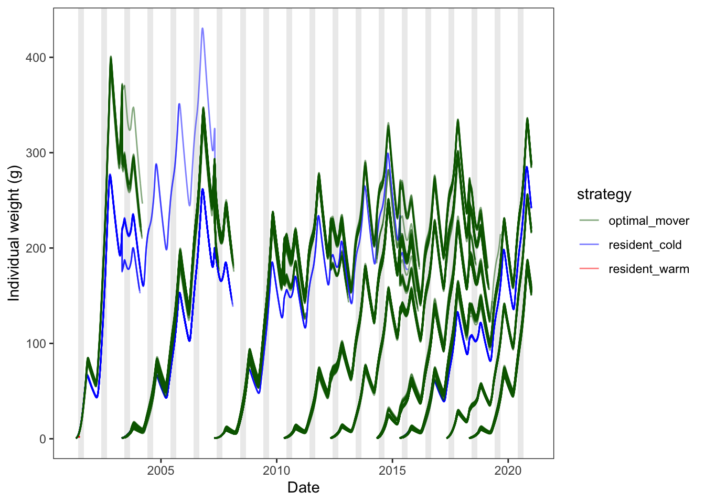
# ggpubr::ggarrange(p1, p2, nrow = 1, common.legend = TRUE)Now zoom into the beginning of the simulation, to look growth trajectories of early recruits
# p1 <- ibm_summary %>%
# filter(date <= min(date) + days(100)) %>%
# ggplot() +
# geom_ribbon(aes(x = date, color = strategy, fill = strategy, ymin = mean_weight - sd_weight, ymax = mean_weight + sd_weight),
# alpha = 0.15, color = NA) +
# geom_line(aes(x = date, color = strategy, fill = strategy, y = mean_weight)) +
# scale_color_manual(values = c(resident_warm = "red",
# resident_cold = "blue",
# optimal_mover = "darkgreen")) +
# scale_fill_manual(values = c(resident_warm = "red",
# resident_cold = "blue",
# optimal_mover = "darkgreen")) +
# theme_bw() + theme(panel.grid = element_blank()) +
# xlab("Date") + ylab("Mean weight ± SD (g)") +
# geom_abline(slope = 0, intercept = 0, linetype = "dashed")
mass_long %>%
filter(date <= min(date) + days(100)) %>%
ggplot() +
geom_line(aes(x = date, y = weight, color = strategy, group = pid), alpha = 0.5) +
scale_color_manual(values = c(resident_warm = "red",
resident_cold = "blue",
optimal_mover = "darkgreen")) +
theme_bw() + theme(panel.grid = element_blank()) +
xlab("Date") + ylab("Individual weight (g)") +
geom_abline(slope = 0, intercept = 0, linetype = "dashed")
# ggpubr::ggarrange(p1, p2, nrow = 1, common.legend = TRUE)Now just look at warm residents. Good, these fish are dying as expected, driven by small body sizes and summer starvation.
# p1 <- ibm_summary %>%
# filter(strategy == "resident_warm", !is.na(mean_weight)) %>%
# ggplot() +
# # geom_rect(data = summer_shading,
# # aes(xmin = xmin, xmax = xmax, ymin = ymin, ymax = ymax),
# # fill = "grey", alpha = 0.3, inherit.aes = FALSE) +
# geom_ribbon(aes(x = date, color = strategy, fill = strategy, ymin = mean_weight - sd_weight, ymax = mean_weight + sd_weight),
# alpha = 0.15, color = NA) +
# geom_line(aes(x = date, color = strategy, fill = strategy, y = mean_weight)) +
# scale_color_manual(values = c(resident_warm = "red",
# resident_cold = "blue",
# optimal_mover = "darkgreen")) +
# scale_fill_manual(values = c(resident_warm = "red",
# resident_cold = "blue",
# optimal_mover = "darkgreen")) +
# theme_bw() + theme(panel.grid = element_blank()) +
# xlab("Date") + ylab("Mean weight ± SD (g)")
mass_long %>%
filter(strategy == "resident_warm", !is.na(weight)) %>%
ggplot() +
# geom_rect(data = summer_shading,
# aes(xmin = xmin, xmax = xmax, ymin = ymin, ymax = ymax),
# fill = "grey", alpha = 0.3, inherit.aes = FALSE) +
geom_line(aes(x = date, y = weight, color = strategy, group = pid), alpha = 0.5) +
scale_color_manual(values = c(resident_warm = "red",
resident_cold = "blue",
optimal_mover = "darkgreen")) +
theme_bw() + theme(panel.grid = element_blank()) +
xlab("Date") + ylab("Individual weight (g)")
# ggpubr::ggarrange(p1, p2, nrow = 1, common.legend = TRUE)Plot histograms of maximum age by strategy. Want to simply make sure that fish are dying at a reasonable time. Most fish won’t live much past age-1, but fish shouldn’t exceed 10 years or so.
max_age_df <- ibm_long |>
dplyr::filter(survived == 1) |>
dplyr::group_by(strategy, pid) |>
dplyr::summarize(max_age = max(age), .groups = "drop")
strategy_colors <- c(resident_warm = "red", resident_cold = "blue", optimal_mover = "darkgreen")
ggplot(max_age_df, aes(x = max_age, fill = strategy)) +
geom_histogram(binwidth = 0.25, color = "white", linewidth = 0.2) +
scale_fill_manual(values = strategy_colors) +
facet_wrap(~ strategy, ncol = 1, scales = "free_y") +
theme_bw() + theme(panel.grid = element_blank(), legend.position = "none") +
xlab("Maximum age (years)") + ylab("Number of fish") +
labs(title = "Maximum age by strategy")
Look at how the mechanisms of survival manifest over time, for each strategy and cohort.
# Build survival probability components for all fish across all alive days
all_surv_df <- tibble(
pid = rep(fish_registry$pid, n_days),
dayofsim = rep(1:n_days, each = nrow(fish_registry)),
condition = as.vector(condition_matrix),
temp = as.vector(temp_matrix),
weight = as.vector(mass_matrix),
growth = as.vector(ggd_matrix),
age = as.vector(age_matrix)
) |>
filter(!is.na(condition)) |>
left_join(fish_registry |> select(pid, strategy, cohort), by = "pid") |>
mutate(
p_temp = fncSurviveTemp(temp, T1 = T1_mort, T9 = T9_mort),
p_starv = fncSurviveStarve(condition, K9 = K9_starv, K1 = K1_starv),
p_sg = fncSurviveSize(weight, maxprob = S_max)[[1]]
) |>
left_join(habitat_df |> select(dayofsim, date), by = "dayofsim") |>
pivot_longer(c(p_temp, p_starv, p_sg),
names_to = "source", values_to = "p_survive") |>
mutate(
source = recode(source,
p_temp = "Temperature (p_temp)",
p_starv = "Starvation (p_starv)",
p_sg = "Size (p_sg)"),
strategy = factor(strategy,
levels = c("resident_warm", "resident_cold", "optimal_mover"))
) |>
filter(strategy != "resident_warm")
mycols <- brewer.pal(4, "Set2")
surv_source_colors <- c(
"Temperature (p_temp)" = mycols[1],
"Starvation (p_starv)" = mycols[2],
"Size (p_sg)" = mycols[3]
)
# Individual fish: one line per fish per mortality source, faceted by strategy
all_surv_df |>
filter(strategy == "optimal_mover") |>
ggplot(aes(x = date, y = p_survive, color = source,
group = interaction(pid, source))) +
geom_rect(data = summer_shading,
aes(xmin = xmin, xmax = xmax, ymin = -Inf, ymax = Inf),
fill = "grey", alpha = 0.3, inherit.aes = FALSE) +
geom_line(alpha = 0.4, linewidth = 0.3) +
scale_color_manual(values = surv_source_colors) +
#scale_y_continuous(limits = c(0, 1)) +
facet_wrap(~(cohort), scales = "free_y") +
theme_bw() + theme(panel.grid = element_blank()) +
xlab("Date") + ylab("Daily survival probability") +
labs(title = "OPTIMAL MOVERS: Mortality sources by cohort — individual fish",
color = "Mortality source")
all_surv_df |>
filter(strategy == "resident_cold") |>
ggplot(aes(x = date, y = p_survive, color = source,
group = interaction(pid, source))) +
geom_rect(data = summer_shading,
aes(xmin = xmin, xmax = xmax, ymin = -Inf, ymax = Inf),
fill = "grey", alpha = 0.3, inherit.aes = FALSE) +
geom_line(alpha = 0.4, linewidth = 0.3) +
scale_color_manual(values = surv_source_colors) +
#scale_y_continuous(limits = c(0, 1)) +
facet_wrap(~(cohort), scales = "free_y") +
theme_bw() + theme(panel.grid = element_blank()) +
xlab("Date") + ylab("Daily survival probability") +
labs(title = "COLD RESIDENTS: Mortality sources by cohort — individual fish",
color = "Mortality source")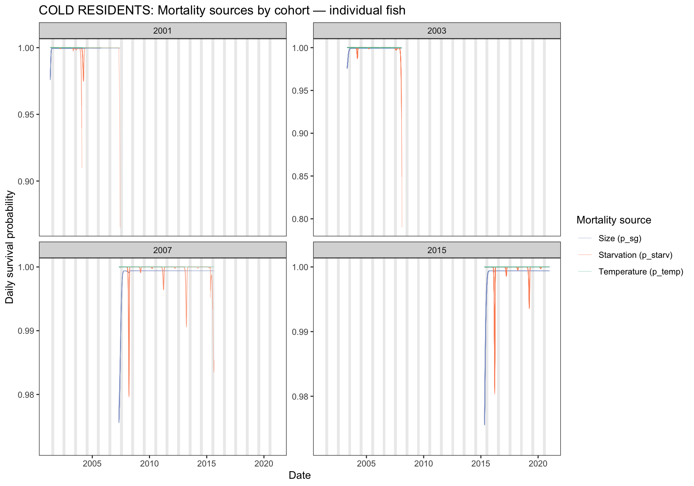
# Group means: daily mean per mortality source, faceted by strategy
all_surv_df |>
filter(strategy == "optimal_mover") |>
group_by(strategy, date, cohort, source) |>
summarise(mean_p = mean(p_survive), .groups = "drop") |>
ggplot(aes(x = date, y = mean_p, color = source)) +
geom_rect(data = summer_shading,
aes(xmin = xmin, xmax = xmax, ymin = -Inf, ymax = Inf),
fill = "grey", alpha = 0.3, inherit.aes = FALSE) +
geom_line(linewidth = 0.9) +
scale_color_manual(values = surv_source_colors) +
#scale_y_continuous(limits = c(0, 1)) +
facet_wrap(~cohort, scales = "free_y") +
theme_bw() + theme(panel.grid = element_blank()) +
xlab("Date") + ylab("Mean daily survival probability") +
labs(title = "OPTIMAL MOVERS: Mortality sources by cohort — group means",
color = "Mortality source")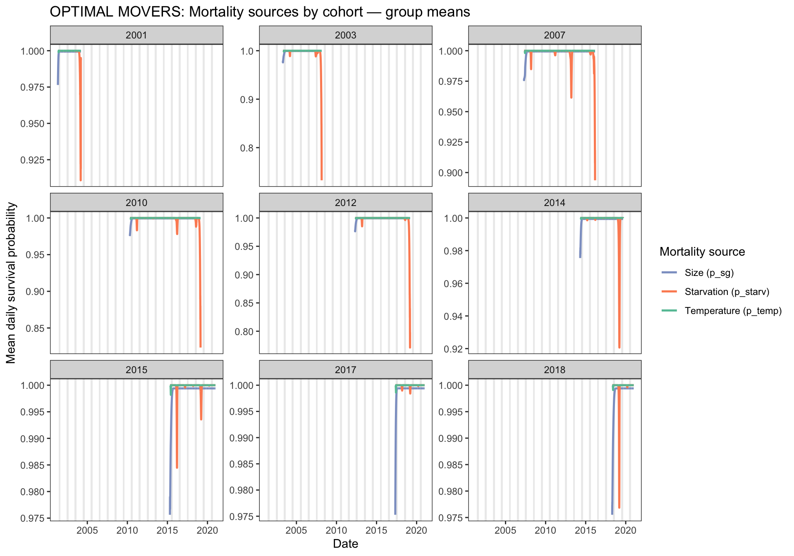
all_surv_df |>
filter(strategy == "resident_cold") |>
group_by(strategy, date, cohort, source) |>
summarise(mean_p = mean(p_survive), .groups = "drop") |>
ggplot(aes(x = date, y = mean_p, color = source)) +
geom_rect(data = summer_shading,
aes(xmin = xmin, xmax = xmax, ymin = -Inf, ymax = Inf),
fill = "grey", alpha = 0.3, inherit.aes = FALSE) +
geom_line(linewidth = 0.9) +
scale_color_manual(values = surv_source_colors) +
#scale_y_continuous(limits = c(0, 1)) +
facet_wrap(~cohort, scales = "free_y") +
theme_bw() + theme(panel.grid = element_blank()) +
xlab("Date") + ylab("Mean daily survival probability") +
labs(title = "COLD RESIDENTS: Mortality sources by cohort — group means",
color = "Mortality source")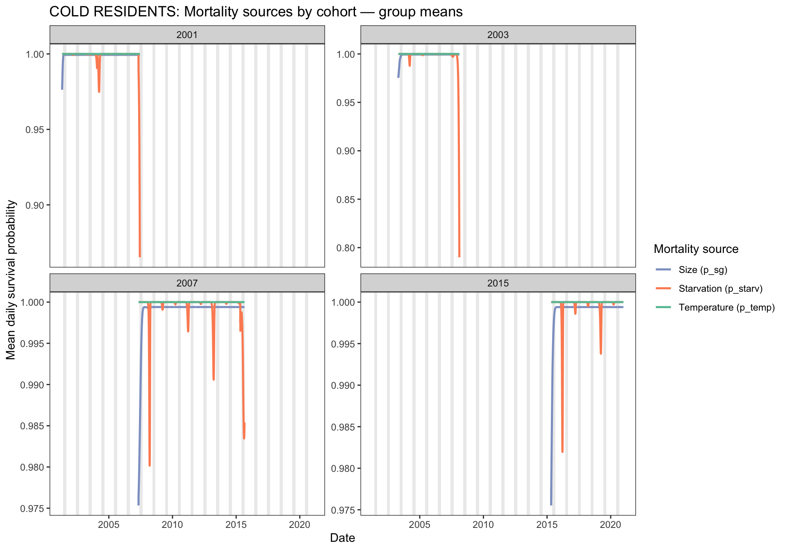
Condition/starvation is a one of the primary drivers or survival. Plot relative condition over time, for each strategy.
ibm_summary |>
# filter(strategy != "resident_warm") |> # warm residents extinct early — plot separately
ggplot(aes(x = date, color = strategy, fill = strategy)) +
geom_rect(data = summer_shading,
aes(xmin=xmin, xmax=xmax, ymin=-Inf, ymax=Inf),
fill="grey", alpha=0.3, inherit.aes=FALSE) +
geom_ribbon(aes(ymin = mean_condition - sd_condition,
ymax = mean_condition + sd_condition),
alpha = 0.15, color = NA) +
geom_line(aes(y = mean_condition)) +
geom_hline(yintercept = c(0.50, 0.30), linetype="dashed", alpha=0.5) +
annotate("text", x = as.Date("2001-12-01"), y = 0.53, hjust=0,
label="K9 = 0.50", size=3, alpha=0.7) +
annotate("text", x = as.Date("2001-12-01"), y = 0.33, hjust=0,
label="K1 = 0.30", size=3, alpha=0.7) +
scale_color_manual(values=c(resident_warm = "red", resident_cold="blue", optimal_mover="darkgreen")) +
scale_fill_manual(values=c(resident_warm = "red", resident_cold="blue", optimal_mover="darkgreen")) +
scale_y_continuous(limits=c(0,1)) +
theme_bw() + theme(panel.grid=element_blank()) +
xlab("Date") + ylab("Relative condition (W / W_peak)") +
labs(title="Mean condition ± SD by strategy over time",
subtitle="Dashed lines = starvation anchor points (K9, K1); shaded = June–Aug",
color="Strategy", fill="Strategy")
Optimal movers and cold residents maintain relatively high condition, and we only see mass loss during the winter when very cold temperatures limit physiological capacity, and immediately following spawning (although this is not quite as extreme). Neither strategy ever approaches the starvation anchor points, meaning that the starvation mechanism is correctly not firing during ~normal seasonal weight loss. In contrast, condition for warm residents declines steeply during the first summer, when food limitations (threshold P_cmax) are insufficient to meet temperature-driven physiological demands.
Patch occupancy for optimal movers — proportion in warm patch through the year.
move_stochastic = "prob", movers only really start to pile into the warm habitat during the shoulder seasons when benefits of warm habitat far exceed the cold habitat.move_stochastic = "Indiv", …sense_environment = "density_current" or sense_environment = "density_all", movers bounce rapidly between the two habitats as they chase the apparently better habitat, but then experience reduced growth due to strong density dependence. This appears to be driven by fact that most movers are doing the same thing.ibm_summary %>%
filter(strategy == "optimal_mover") %>%
ggplot(aes(x = date, y = prop_warm)) +
geom_line() +
geom_hline(yintercept = 0.5, linetype = "dashed", color = "gray50") +
theme_bw() + facet_wrap(~year(date), scales = "free_x") +
xlab("Date") + ylab("Proportion of optimal movers in warm patch")
Adjusting the size-based cost of movement also seems to fix the rapid “bounce back and forth” that juveniles previously did suring the shoulder seasons.
Build a long-form patch history for optimal movers:
patch_long <- as_tibble(patch_matrix) |>
bind_cols(fish_registry |> select(pid, strategy, cohort)) |>
pivot_longer(-c(pid, strategy, cohort), names_to = "day", values_to = "patch") |>
mutate(dayofsim = as.integer(sub("V", "", day))) |>
left_join(habitat_df |> select(dayofsim, date), by = "dayofsim") |>
filter(!is.na(patch)) |>
select(-day)
mover_patch <- patch_long |> filter(strategy == "optimal_mover")Raster of all optimal movers. Each row is one fish, each column is a day, fill = patch. Fish are ordered by their overall proportion of time in the warm patch. Synchronised individuals will produce horizontal bands switching at the same time; independent movers will produce a noisier mosaic.
At seasonal and annual timescales, fish show similar movement patterns–tracking the primary gradient in growth potential and it shifts seasonally between warm and cold patches. But we also see individual variation at finer timescales, driven by stochasticity from the softmax patch selection function. Another observation is that the allometric scaling of the cost of movement appears to be working as expected. Early in the simulation, small fish switch infrequently (only when the benefit of switching is very large). But later on, larger fish switch more frequently, navigating smaller magnitude differences in density-dependent growth potential.
# Order fish by proportion of time spent in warm patch
pid_order <- mover_patch |>
group_by(pid) |>
summarise(prop_warm = mean(patch == "warm"), .groups = "drop") |>
arrange(prop_warm)
# All cohorts
mover_patch |>
mutate(pid = factor(pid, levels = pid_order$pid)) |>
ggplot(aes(x = date, y = pid, fill = patch)) +
# geom_rect(data = summer_shading,
# aes(xmin = xmin, xmax = xmax, ymin = -Inf, ymax = Inf),
# fill = "grey", alpha = 0.4, inherit.aes = FALSE) +
geom_tile() +
scale_fill_manual(values = c(warm = "#d95f02", cold = "#1f78b4")) +
theme_bw() +
theme(panel.grid = element_blank(),
axis.text.y = element_blank(),
axis.ticks.y = element_blank()) +
xlab("Date") + ylab("Individual fish (ordered by % time in warm)") +
labs(title = "Patch occupancy — all optimal movers",
subtitle = "Shaded = June–Aug; fish ordered bottom-to-top by increasing warm-patch use",
fill = "Patch") +
facet_wrap(~cohort, scales = "free")
# selected cohorts: early, mid, late
# mover_patch |>
# filter(cohort == 2001) %>%
# mutate(pid = factor(pid, levels = pid_order$pid)) |>
# ggplot(aes(x = date, y = pid, fill = patch)) +
# geom_tile() +
# scale_fill_manual(values = c(warm = "#d95f02", cold = "#1f78b4")) +
# theme_bw() +
# theme(panel.grid = element_blank(),
# axis.text.y = element_blank(),
# axis.ticks.y = element_blank()) +
# xlab("Date") + ylab("Individual fish (ordered by % time in warm)") +
# labs(title = "Patch occupancy — all optimal movers",
# subtitle = "Shaded = June–Aug; fish ordered bottom-to-top by increasing warm-patch use",
# fill = "Patch") +
# facet_wrap(~cohort, scales = "free")
#
#
# mover_patch |>
# filter(cohort == 2012) %>%
# mutate(pid = factor(pid, levels = pid_order$pid)) |>
# ggplot(aes(x = date, y = pid, fill = patch)) +
# geom_tile() +
# scale_fill_manual(values = c(warm = "#d95f02", cold = "#1f78b4")) +
# theme_bw() +
# theme(panel.grid = element_blank(),
# axis.text.y = element_blank(),
# axis.ticks.y = element_blank()) +
# xlab("Date") + ylab("Individual fish (ordered by % time in warm)") +
# labs(title = "Patch occupancy — all optimal movers",
# subtitle = "Shaded = June–Aug; fish ordered bottom-to-top by increasing warm-patch use",
# fill = "Patch") +
# facet_wrap(~cohort, scales = "free")
#
#
# mover_patch |>
# filter(cohort == 2015) %>%
# mutate(pid = factor(pid, levels = pid_order$pid)) |>
# ggplot(aes(x = date, y = pid, fill = patch)) +
# geom_tile() +
# scale_fill_manual(values = c(warm = "#d95f02", cold = "#1f78b4")) +
# theme_bw() +
# theme(panel.grid = element_blank(),
# axis.text.y = element_blank(),
# axis.ticks.y = element_blank()) +
# xlab("Date") + ylab("Individual fish (ordered by % time in warm)") +
# labs(title = "Patch occupancy — all optimal movers",
# subtitle = "Shaded = June–Aug; fish ordered bottom-to-top by increasing warm-patch use",
# fill = "Patch") +
# facet_wrap(~cohort, scales = "free")Fish are generally acting similarly at seasonal and annual timescales, but on any given day fish are largely acting independently. To introduce additional variation in movement strategies, consider the following:
tau, the sensitivity to growth differences specified by the softmax function (steepness). Increasing tau would make all fish more randomly noisy in their decisions (similar to if we add simple random variation) but also may have the unintended consequence of making fish more reluctant to move (i.e., fish need a larger growth benefit to initiate a movement). But tau also applies identically to every fish…so any reduced synchrony in movement decisions would be entirely stochastic, rather than biologically meaningful individual variationmove_stochastic = "indiv" with sigma_bold is the mechanism for this. Each fish draws a fixed movement threshold from a distribution, so some fish are consistently “bold” (move even when the gain is marginal) and others are consistently “reluctant” (only move when the growth advantage is large). That creates genuine individual variation in movement decisions that persists through time — not just day-to-day noise.When to fish make their first move? For each fish, record every day a patch switch occurs, then trim to the first movement and find the fish age and size on this day. Vertical clustering = synchronised switching; diffuse scatter = independent behaviour.
switch_events <- mover_patch |>
arrange(pid, date) |>
group_by(pid) |>
mutate(switched = patch != lag(patch)) |>
filter(switched) |>
ungroup()
first_switch <- switch_events |>
group_by(pid, cohort) |>
slice_min(dayofsim, n = 1, with_ties = FALSE) |>
ungroup() |>
left_join(
ibm_long |> select(pid, dayofsim, age, weight),
by = c("pid", "dayofsim")
)
# facet by destination patch
ggplot(first_switch, aes(x = weight)) +
geom_histogram(bins = 50) +
scale_x_log10() +
#xlim(0,3) +
geom_vline(xintercept = start_wt, linetype = "dashed", color = "red") +
geom_vline(xintercept = 1, linetype = "dashed", color = "black") +
facet_wrap(~patch, ncol = 1, labeller = labeller(patch = c(cold = "First move → cold", warm = "First move → warm"))) +
xlab("Weight at first switch (g, log scale)") +
ylab("Count") +
theme_bw() +
theme(panel.grid.minor = element_blank())
# by date
first_switch |>
mutate(doy = yday(date)) |>
ggplot(aes(x = doy)) +
geom_histogram(bins = 52) +
facet_wrap(~patch, ncol = 1,
labeller = labeller(patch = c(cold = "First move → cold", warm = "First move → warm"))) +
scale_x_continuous(
breaks = c(1, 60, 121, 182, 244, 305),
labels = c("Jan", "Mar", "May", "Jul", "Sep", "Nov")
) +
xlab("Day of year") + ylab("Count") +
theme_bw() +
theme(panel.grid.minor = element_blank())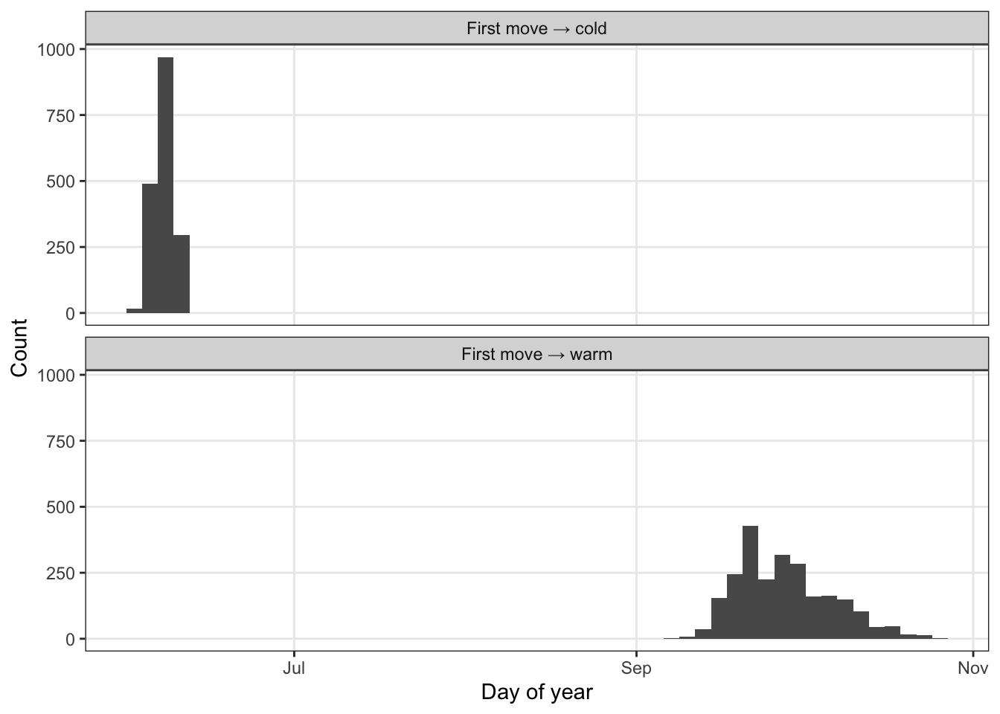
# facet by cohort
ggplot(first_switch, aes(x = weight)) +
geom_histogram(bins = 50) +
scale_x_log10() +
#xlim(0,3) +
geom_vline(xintercept = start_wt, linetype = "dashed", color = "red") +
geom_vline(xintercept = 1, linetype = "dashed", color = "black") +
facet_wrap(~cohort) +
xlab("Weight at first switch (g, log scale)") +
ylab("Count") +
theme_bw() +
theme(panel.grid.minor = element_blank())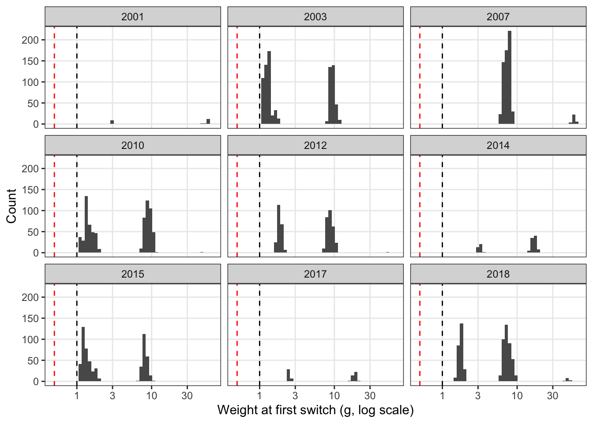
This seems a little more realistic. Fish are now making their first movements at larger body sizes. For fish born in the warm habitat, their first movement (into the cold patch) occurs in mid-June, just after fish have exceeded the size threshold above which movement becomes less costly but also at a time when growth potentialy in the warm habitat is very low as temperatures exceed metabolic optima. For fish born in the cold habitat, their first movement (into the warm patch) occurs in October, when fish are larger and cold-temps in the cold habitat are limiting to growth.
How frequently do fish move and how does this change over their life span? Calculate the number of movements per year for each individual, then plot cohort means over time.
# Join switch_events with ibm_long to get age at each switch
# then count switches per fish per year-of-life
switches_by_age <- switch_events |>
left_join(
ibm_long |> select(pid, dayofsim, age, weight),
by = c("pid", "dayofsim")
) |>
mutate(age_year = floor(age))
# Count switches per fish per age year
annual_switches <- switches_by_age |>
count(pid, cohort, age_year, name = "n_switches")
# Quick look at coverage and range
# annual_switches |>
# summarise(
# n_fish = n_distinct(pid),
# age_yr_max = max(age_year),
# median_sw = median(n_switches),
# max_sw = max(n_switches)
# )
# Summarise: mean + 1 SD per (cohort × age year)
switch_summary <- annual_switches |>
group_by(cohort, age_year) |>
summarise(
mean_sw = mean(n_switches),
sd_sw = sd(n_switches),
median_sw = median(n_switches),
q25 = quantile(n_switches, 0.25),
q75 = quantile(n_switches, 0.75),
n = n(),
.groups = "drop"
)
# Plot: mean ± SD ribbon per cohort-year, faceted by cohort
# Keep only age years with ≥ 3 fish to avoid noisy tails
switch_summary |>
filter(n >= 3) |>
ggplot(aes(x = age_year, y = mean_sw)) +
geom_ribbon(aes(ymin = pmax(0, mean_sw - sd_sw),
ymax = mean_sw + sd_sw),
alpha = 0.25) +
geom_line(linewidth = 0.8) +
geom_point(size = 1.2) +
facet_wrap(~cohort, ncol = 6) +
scale_x_continuous(breaks = seq(0, 16, by = 4)) +
labs(
x = "Age (years)",
y = "Switches per year (mean ± SD)",
title = "Annual patch switching frequency over the lifespan — optimal movers",
subtitle = "Each panel = cohort year; shaded band = ±1 SD; points shown for age classes with ≥ 3 fish"
) +
theme_bw() +
theme(panel.grid.minor = element_blank(),
strip.text = element_text(size = 8))
# Overlaid view: all cohorts on one panel, colored by cohort year
switch_summary |>
filter(n >= 3) |>
ggplot(aes(x = age_year, y = mean_sw,
color = factor(cohort), group = cohort)) +
geom_line(linewidth = 0.7, alpha = 0.8) +
geom_point(size = 1.5, alpha = 0.8) +
scale_color_viridis_d(option = "turbo", name = "Cohort") +
scale_x_continuous(breaks = seq(0, 16, by = 2)) +
labs(
x = "Age (years)",
y = "Mean switches per year",
title = "Annual patch switching frequency by cohort — optimal movers",
subtitle = "Each line = one cohort; points shown for age classes with ≥ 3 fish"
) +
theme_bw() +
theme(panel.grid.minor = element_blank(),
legend.position = "right",
legend.key.height = unit(0.5, "cm"))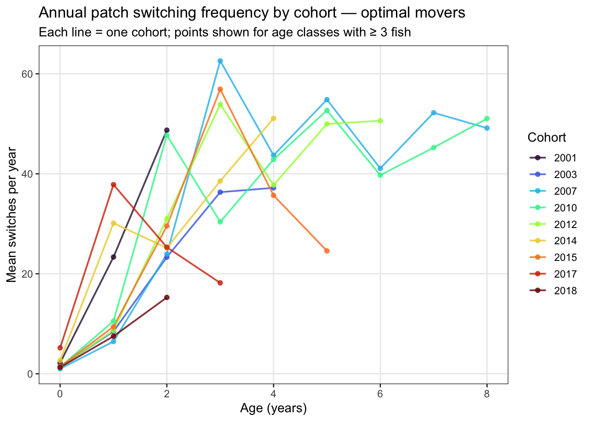
This confirms a couple things. First, small fish move infrequently b/c the relative energetic cost of movement is quite high. As fish age and grow larger, they move more frequently b/c the cost of movement is considerably lower (on a g/g/d basis).
(Switch rate almost always drops off during the final year b/c fish are only observed for a partial year during the year of death)
What is striking about these results is that older fish are making very frequent movement during the winter. This is likely driven by two things. First, temperatures are very similar between the two habitat during winter, so the benefit of being in the warm habitat is not that strong. Second, large fish experience a very low cost of movement on a g/g/d basis, so they are more free to move back and forth to negotiate these relatively small differences in growth potential.
Build spawner traits database
spawn_days <- unique(spawn_log$dayofsim)
# Spawner traits: join spawn_log → fish_registry (strategy) → ibm_long (age only)
# weight and condition come from spawn_log directly (pre-spawn values logged at spawn time)
spawner_traits <- spawn_log |>
left_join(fish_registry |> select(pid, strategy), by = c("parent_pid" = "pid")) |>
left_join(
ibm_long |> select(pid, dayofsim, age),
by = c("parent_pid" = "pid", "dayofsim")
) |>
transmute(
pid = parent_pid,
dayofsim,
weight, condition, age, strategy,
spawned = "Spawner"
)
# Non-spawner traits: all fish alive on those same days that didn't spawn
non_spawner_traits <- ibm_long |>
filter(dayofsim %in% spawn_days, !is.na(weight), !is.na(condition)) |>
anti_join(spawn_log, by = c("pid" = "parent_pid", "dayofsim")) |>
transmute(pid, dayofsim, weight, condition, age, strategy, spawned = "Non-spawner")
spawner_df <- bind_rows(spawner_traits, non_spawner_traits)
cat("Spawner records:", nrow(spawner_traits), "\n")Spawner records: 184 cat("Non-spawner records:", nrow(non_spawner_traits), "\n")Non-spawner records: 114861 cat("NAs in spawner traits:\n")NAs in spawner traits:spawner_traits |> summarise(across(everything(), ~sum(is.na(.))))# A tibble: 1 × 7
pid dayofsim weight condition age strategy spawned
<int> <int> <int> <int> <int> <int> <int>
1 0 0 0 0 0 0 0Compare spawner vs. non-spawner traits
# Add sample size labels for annotation
n_labels <- spawner_df |>
group_by(strategy, spawned) |>
summarise(n = n(), .groups = "drop") |>
mutate(label = paste0("n=", n))
# Filter to strategies with spawners
plot_df_spawn <- spawner_df |>
filter(strategy != "resident_warm") |>
mutate(strategy = factor(strategy, levels = c("optimal_mover", "resident_cold"),
labels = c("Optimal mover", "Resident (cold)")))
n_labels_plot <- n_labels |>
filter(strategy != "resident_warm") |>
mutate(strategy = factor(strategy, levels = c("optimal_mover", "resident_cold"),
labels = c("Optimal mover", "Resident (cold)")))
make_trait_plot <- function(data, x_var, x_label) {
ggplot(data, aes(x = .data[[x_var]], fill = spawned, color = spawned)) +
geom_density(alpha = 0.35, linewidth = 0.6) +
geom_rug(
data = filter(data, spawned == "Spawner"),
sides = "b", linewidth = 0.5, alpha = 0.8, color = "#d62728"
) +
facet_wrap(~strategy, ncol = 1) +
scale_fill_manual(values = c("Non-spawner" = "#7bafd4", "Spawner" = "#d62728")) +
scale_color_manual(values = c("Non-spawner" = "#7bafd4", "Spawner" = "#d62728")) +
labs(x = x_label, y = "Density", fill = NULL, color = NULL) +
theme_minimal(base_size = 11) +
theme(
legend.position = "bottom",
strip.text = element_text(face = "bold"),
panel.spacing = unit(0.8, "lines")
)
}
p_wt_dist2 <- make_trait_plot(plot_df_spawn, "weight", "Weight (g)")
p_cond_dist2 <- make_trait_plot(plot_df_spawn, "condition", "Condition (K)")
(p_wt_dist2 + p_cond_dist2 + plot_layout(guides = "collect")) +
plot_annotation(
title = "Spawner vs. non-spawner traits on spawning days",
subtitle = "Resident (warm) excluded — no spawning events observed",
theme = theme(plot.title = element_text(face = "bold", size = 13))
) &
theme(legend.position = "bottom")
A few things stand out from these plots:
Weight — Spawners (red) skew strongly toward larger body sizes compared to the broader non-spawner pool, which is expected since the non-spawner group includes many small/young fish.
Condition — The condition plot is more striking. Spawners cluster at intermediate condition (~0.75–0.95), while a large portion of non-spawners pile up at K ≈ 1.0. That spike at the upper end of non-spawners likely reflects the maximum condition cap in the IBM. This suggests spawning is triggered before fish reach peak condition — consistent with a threshold trigger — or that fish with very high condition are young/small and not yet mature.
spawn_plot_df <- spawn_log |>
left_join(fish_registry |> select(pid, strategy), by = c("parent_pid" = "pid")) |>
left_join(
ibm_long |> select(pid, dayofsim, date),
by = c("parent_pid" = "pid", "dayofsim")
) |>
mutate(
year = year(date),
doy = yday(date),
strategy_lbl = recode(strategy,
optimal_mover = "Optimal mover",
resident_cold = "Resident (cold)"
),
year_f = factor(year)
)
# Top panel: pooled density by strategy (overall DOY distribution)
p_density <- ggplot(spawn_plot_df, aes(x = doy, y = strategy_lbl, fill = strategy_lbl)) +
geom_density_ridges(
alpha = 0.55, scale = 0.85, bandwidth = 3,
jittered_points = TRUE,
point_size = 2.5, point_alpha = 0.8,
position = position_points_jitter(height = 0.05, seed = 812)
) +
scale_x_continuous(
breaks = seq(114, 136, by = 4),
labels = function(x) format(as.Date(x - 1, origin = "2001-01-01"), "%b %d")
) +
scale_fill_manual(values = c("Optimal mover" = "darkgreen", "Resident (cold)" = "blue"),
guide = "none") +
labs(
title = "Distribution of spawn timing (pooled across years)",
x = NULL, y = NULL
) +
theme_minimal(base_size = 11) +
theme(axis.text.y = element_text(face = "bold"))
# Bottom panel: per-year dot strip, size = n_offspring
p_annual <- ggplot(spawn_plot_df,
aes(x = doy, y = fct_rev(year_f), color = strategy_lbl, size = weight)) +
geom_point(alpha = 0.75) +
scale_x_continuous(
breaks = seq(114, 136, by = 4),
labels = function(x) format(as.Date(x - 1, origin = "2001-01-01"), "%b %d")
) +
scale_color_manual(values = c("Optimal mover" = "darkgreen", "Resident (cold)" = "blue")) +
scale_size_continuous(range = c(2, 9), name = "Weight (g)") +
labs(
title = "Spawning events by year",
subtitle = "Point size proportional to weight at spawning",
x = "Day of year", y = "Year",
color = "Strategy"
) +
theme_minimal(base_size = 11) +
theme(legend.position = "right")
# combine plots
ggpubr::ggarrange(p_density, p_annual, nrow = 2, heights = c(1, 2.5))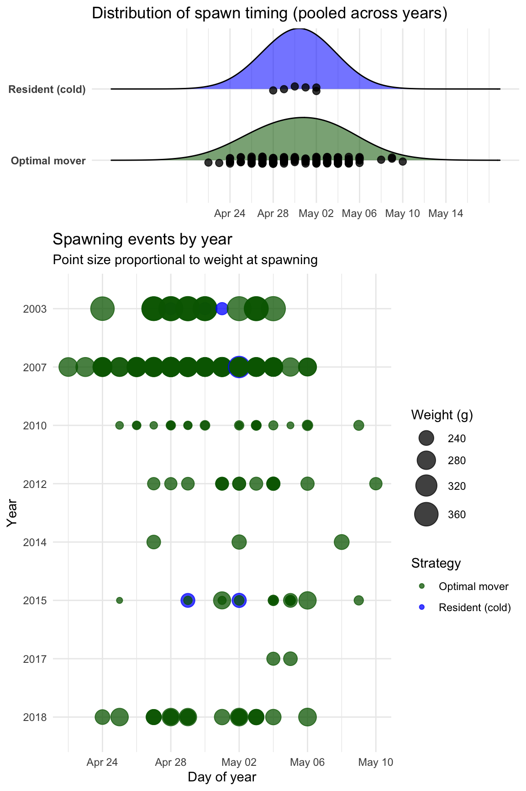
Does mean spawn timing change over time?
spawn_plot_df %>%
ggplot(aes(x = year, y = doy)) +
geom_point() +
theme_bw() +
geom_smooth() + facet_wrap(~strategy, scales = "free_y") +
xlab("Year") + ylab("Spawning day of year")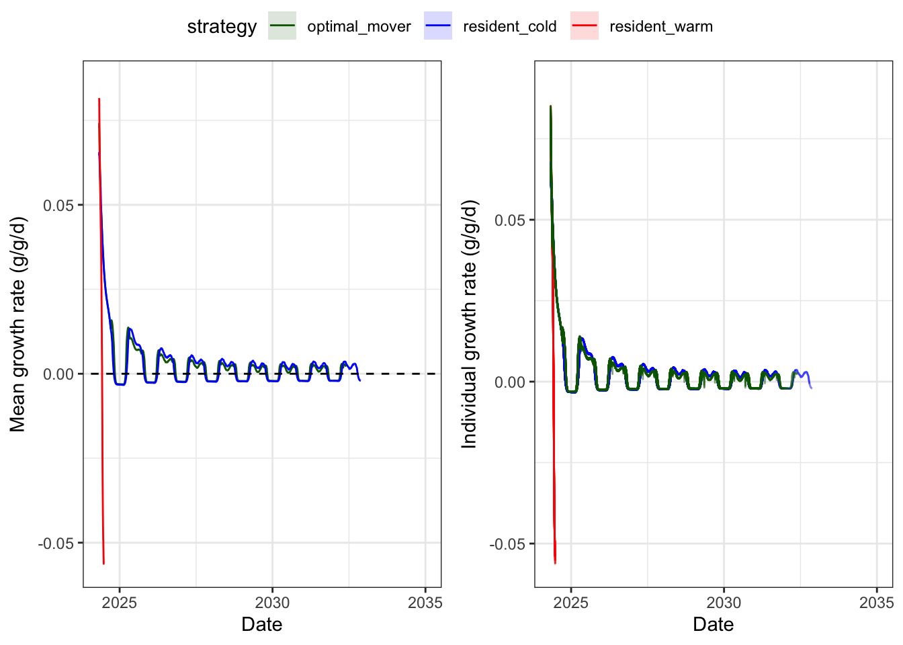
Is spawning date related to weight or condition?
p1 <- spawn_plot_df %>%
ggplot(aes(x = weight, y = doy)) +
geom_point() +
theme_bw() +
geom_smooth(method = "lm") + facet_wrap(~strategy, scales = "free") +
xlab("Weight (g)") + ylab("Spawning day of year")
p2 <- spawn_plot_df %>%
ggplot(aes(x = condition, y = doy)) +
geom_point() +
theme_bw() +
geom_smooth(method = "lm") + facet_wrap(~strategy, scales = "free") +
xlab("Condition") + ylab("Spawning day of year")
egg::ggarrange(p1, p2, nrow = 2)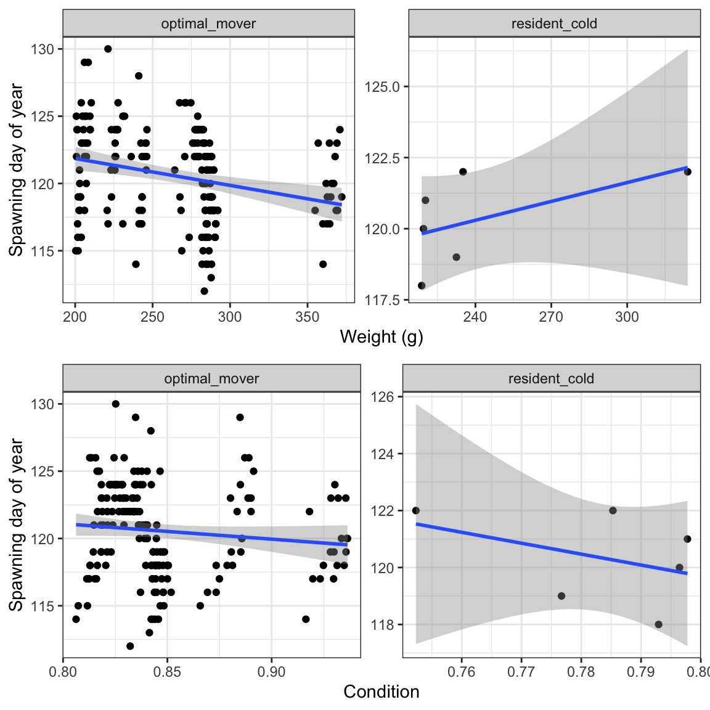
No strong relationships, but this makes sense as fish will only spawn once they pass certain thresholds for size and condition.
Do weight and condition interact to drive spawn timing? Not meaningfully
summary(lm(doy ~ weight*condition, data = spawn_plot_df))
Call:
lm(formula = doy ~ weight * condition, data = spawn_plot_df)
Residuals:
Min 1Q Median 3Q Max
-8.0063 -2.1741 0.2785 2.4960 8.3685
Coefficients:
Estimate Std. Error t value Pr(>|t|)
(Intercept) 158.6607 34.5440 4.593 8.19e-06 ***
weight -0.1371 0.1178 -1.163 0.246
condition -37.8575 39.7866 -0.952 0.343
weight:condition 0.1344 0.1342 1.002 0.318
---
Signif. codes: 0 '***' 0.001 '**' 0.01 '*' 0.05 '.' 0.1 ' ' 1
Residual standard error: 3.351 on 180 degrees of freedom
Multiple R-squared: 0.06859, Adjusted R-squared: 0.05307
F-statistic: 4.418 on 3 and 180 DF, p-value: 0.005031This is somewhat interesting. We would expect that larger (i.e., older, given that most variation in size is due to age differences) fish in better condition would spawn earlier. But this isn’t happening…perhaps this is due to the fact that fish are simply not growing large enough to generate meaningful variation in size at spawning.
Age at first spawning
# First spawning event per fish
age_first_spawn <- spawn_log |>
group_by(parent_pid) |>
slice_min(dayofsim, n = 1, with_ties = FALSE) |>
ungroup() |>
left_join(fish_registry |> select(pid, strategy, cohort), by = c("parent_pid" = "pid")) |>
left_join(
ibm_long |> select(pid, dayofsim, age, date),
by = c("parent_pid" = "pid", "dayofsim")
) |>
mutate(
spawn_year = year(date),
age_first_yrs = age,
strategy_lbl = recode(strategy,
optimal_mover = "Optimal mover",
resident_cold = "Resident (cold)"
)
)
cat("n fish that ever spawned:", nrow(age_first_spawn), "\n\n")n fish that ever spawned: 183 age_first_spawn |>
group_by(strategy_lbl) |>
summarise(
n = n(),
mean = mean(age_first_yrs),
median = median(age_first_yrs),
min = min(age_first_yrs),
max = max(age_first_yrs),
.groups = "drop"
)# A tibble: 2 × 6
strategy_lbl n mean median min max
<chr> <int> <dbl> <dbl> <dbl> <dbl>
1 Optimal mover 177 4.26 4.01 1.98 8.02
2 Resident (cold) 6 4.67 4.01 1.99 8.01ggplot(age_first_spawn, aes(x = strategy_lbl, y = age_first_yrs)) +
# IQR bar + mean for optimal_mover
geom_boxplot(aes(fill = strategy_lbl), alpha = 0.2) +
# geom_linerange(
# data = summary_afs,
# aes(x = strategy_lbl, ymin = lo, ymax = hi, color = strategy_lbl),
# linewidth = 4, alpha = 0.25, inherit.aes = FALSE
# ) +
# geom_point(
# data = summary_afs,
# aes(x = strategy_lbl, y = median, color = strategy_lbl),
# shape = 18, size = 5, inherit.aes = FALSE
# ) +
# Individual fish
geom_jitter(aes(color = strategy_lbl), width = 0.12, size = 2.5, alpha = 0.65) +
# n label
# geom_text(
# data = summary_afs,
# aes(x = strategy_lbl, y = -0.3, label = paste0("n = ", n), color = strategy_lbl),
# size = 3.5, fontface = "italic", inherit.aes = FALSE
# ) +
scale_color_manual(
values = c("Optimal mover" = "darkgreen", "Resident (cold)" = "blue"),
guide = "none"
) +
scale_fill_manual(
values = c("Optimal mover" = "darkgreen", "Resident (cold)" = "blue"),
guide = "none"
) +
scale_y_continuous(breaks = seq(0, 12, by = 2), limits = c(-0.7, 13)) +
labs(
title = "Age at first spawning by strategy",
subtitle = "Diamond = median | Shaded bar = IQR | One artifact excluded (age < 30 days)",
x = NULL, y = "Age at first spawn (years)"
) +
theme_minimal(base_size = 12) +
theme(panel.grid.major.x = element_blank())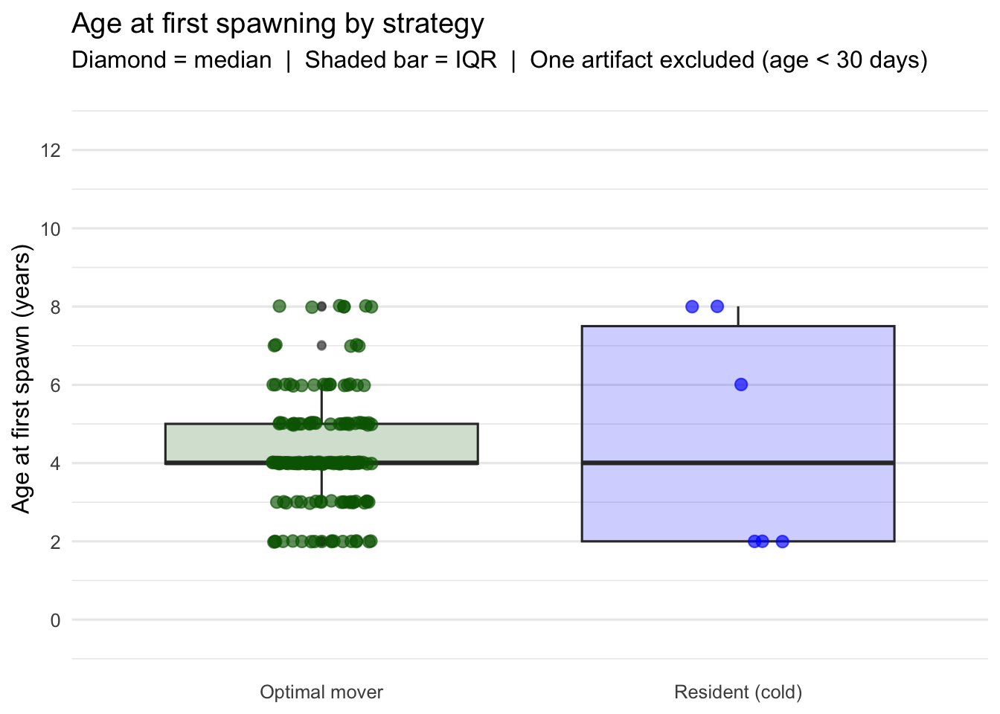
Compute and plot number and proportion of fish spawning in each year, by cohort and strategy
# ── Spawner counts per cohort × year ──────────────────────────────────────────
spawners_by_cohort_yr <- spawn_log |>
left_join(fish_registry |> select(pid, strategy, cohort), by = c("parent_pid" = "pid")) |>
left_join(
ibm_long |> select(pid, dayofsim, date) |> distinct(),
by = c("parent_pid" = "pid", "dayofsim")
) |>
mutate(spawn_year = year(date)) |>
group_by(cohort, spawn_year, strategy) |>
summarise(n_spawners = n_distinct(parent_pid), .groups = "drop")
# ── Fish alive during spawning season (May) per cohort × year ─────────────────
alive_spawning_season <- ibm_long |>
filter(month(date) == 5) |>
mutate(spawn_year = year(date)) |>
group_by(cohort, spawn_year, strategy) |>
summarise(n_alive = n_distinct(pid), .groups = "drop")
# ── Join and compute proportion ────────────────────────────────────────────────
cohort_heatmap_df <- alive_spawning_season |>
left_join(spawners_by_cohort_yr, by = c("cohort", "spawn_year", "strategy")) |>
mutate(
n_spawners = replace_na(n_spawners, 0),
prop_spawned = n_spawners / n_alive
) |>
# Only show years where cohort could plausibly be alive (spawn_year >= cohort)
filter(spawn_year > cohort)
# cat("Preview:\n")
# cohort_heatmap_df |> filter(n_spawners > 0)
### PLOT
strategy_labels <- c(
optimal_mover = "Optimal mover",
resident_cold = "Resident (cold)",
resident_warm = "Resident (warm)"
)
# Age at spawning (years since cohort birth) for axis annotation
plot_df_heat <- cohort_heatmap_df |>
mutate(
age_at_spawn = spawn_year - cohort,
strategy_lbl = recode(strategy, !!!strategy_labels),
# Treat zero-spawning cells as NA so they're visually distinct from
# years where the cohort was simply absent
prop_display = if_else(prop_spawned == 0, NA_real_, prop_spawned)
)
ggplot(plot_df_heat, aes(x = factor(spawn_year), y = factor(cohort), fill = prop_display)) +
geom_tile(color = "white", linewidth = 0.4) +
geom_text(
data = filter(plot_df_heat, n_spawners > 0),
aes(label = n_spawners),
size = 2.8, color = "white", fontface = "bold"
) +
scale_fill_viridis_c(
option = "magma", direction = -1,
na.value = "grey92",
name = "Proportion\nspawning",
labels = scales::label_percent(accuracy = 1)
) +
facet_wrap(~strategy_lbl, ncol = 1, scales = "free_y") +
labs(
title = "Proportion of each cohort spawning per year",
subtitle = "Cell labels show number of spawners | Grey = cohort alive but no spawning events",
x = "Spawning year", y = "Cohort (birth year)"
) +
theme_minimal(base_size = 11) +
theme(
axis.text.x = element_text(angle = 45, hjust = 1),
strip.text = element_text(face = "bold"),
panel.grid = element_blank(),
legend.key.height = unit(1.2, "cm")
)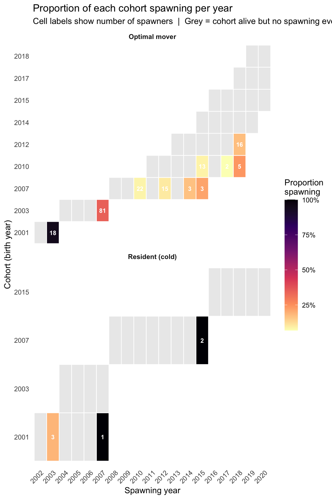
A few things stand out here:
Optimal mover — The 2001 cohort shows a strong burst of 6 spawners in 2003 (~32% of survivors), which is the highest single-year proportion. But spawning is generally sparse and episodic — most cohort × year cells with survivors show no spawning event. The dark cell (2004 cohort, 2014) hits ~100% but that’s a very small surviving cohort (1 of 1 fish).
Resident (cold) — Only the 2001 cohort produced any spawners (4 total across three years), and no subsequent cohort spawned at all. This is consistent with the earlier finding that resident_cold almost never reproduces.
These results may be driven by the fact that fish are not growing large enough to spawn consistently.
Reproductive success by fish size.
fecundity_df <- spawn_log |>
left_join(fish_registry |> select(pid, strategy), by = c("parent_pid" = "pid")) |>
left_join(
ibm_long |> select(pid, dayofsim, age, date),
by = c("parent_pid" = "pid", "dayofsim")
) |>
mutate(
strategy_lbl = recode(strategy,
optimal_mover = "Optimal mover",
resident_cold = "Resident (cold)"
),
spawn_year = year(date)
) |>
filter(age >= 30 / 365) # remove newborn artifact
pal <- c("Optimal mover" = "darkgreen", "Resident (cold)" = "blue")
# Pearson correlation for annotation
r_om <- with(filter(fecundity_df, strategy_lbl == "Optimal mover"),
cor(weight, n_offspring))
r_rc <- with(filter(fecundity_df, strategy_lbl == "Resident (cold)"),
cor(weight, n_offspring))
ann_df <- tibble(
strategy_lbl = c("Optimal mover", "Resident (cold)"),
label = c(sprintf("r = %.2f (n = %d)", r_om,
sum(fecundity_df$strategy_lbl == "Optimal mover")),
sprintf("r = %.2f (n = %d)", r_rc,
sum(fecundity_df$strategy_lbl == "Resident (cold)")))
)
ggplot(fecundity_df, aes(x = weight, y = n_offspring, color = strategy_lbl)) +
geom_smooth(
#data = filter(fecundity_df, strategy_lbl == "Optimal mover"),
method = "lm", se = TRUE, linewidth = 0.8#, alpha = 0.15
) +
geom_point(aes(size = age), alpha = 0.75) +
geom_text(
data = ann_df,
aes(label = label),
x = -Inf, y = Inf, hjust = -0.1, vjust = 1.5,
size = 3.5, fontface = "italic", inherit.aes = FALSE
) +
scale_color_manual(values = pal, guide = "none") +
scale_size_continuous(range = c(2, 8), name = "Age at\nspawn (yrs)") +
facet_wrap(~strategy_lbl, scales = "free_x") +
labs(
title = "Fecundity–weight relationship at spawning",
subtitle = "Point size = age at spawning | Shaded band = 95% CI on linear fit",
x = "Weight at spawning (g)",
y = "Number of offspring"
) +
theme_bw(base_size = 12) +
theme(
panel.grid.minor = element_blank()
)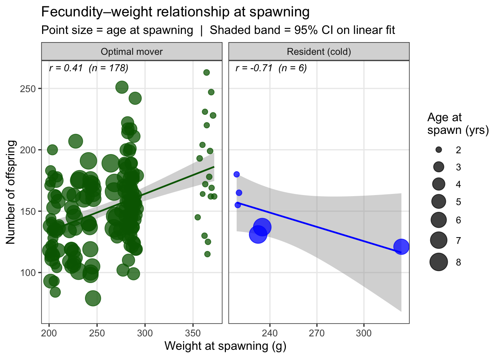
View total recruitment (offspring production) and per-capita reproductive success over time, by strategy
# Build annual offspring summary
offspring_annual <- spawn_log |>
left_join(fish_registry |> select(pid, strategy), by = c("parent_pid" = "pid")) |>
left_join(
ibm_long |> select(pid, dayofsim, date) |> distinct(),
by = c("parent_pid" = "pid", "dayofsim")
) |>
mutate(
spawn_year = year(date),
strategy_lbl = recode(strategy,
optimal_mover = "Optimal mover",
resident_cold = "Resident (cold)"
)
) |>
group_by(spawn_year, strategy_lbl) |>
summarise(
total_offspring = sum(n_offspring),
n_spawners = n_distinct(parent_pid),
offspring_per_spawner = total_offspring / n_spawners,
.groups = "drop"
)
# offspring_annual
# Fill in years with no spawning as explicit zeros for total offspring
all_years <- tibble(spawn_year = 2002:2020)
strategies <- tibble(strategy_lbl = c("Optimal mover", "Resident (cold)"))
offspring_full <- crossing(all_years, strategies) |>
left_join(offspring_annual, by = c("spawn_year", "strategy_lbl")) |>
mutate(
total_offspring = replace_na(total_offspring, 0),
n_spawners = replace_na(n_spawners, 0)
# leave offspring_per_spawner as NA when no spawning
)
pal <- c("Optimal mover" = "darkgreen", "Resident (cold)" = "blue")
# ── Panel 1: Total offspring per year ─────────────────────────────────────────
p_total <- ggplot(offspring_full,
aes(x = spawn_year, y = total_offspring, color = strategy_lbl)) +
geom_line(linewidth = 0.8, alpha = 0.8) +
geom_point(aes(size = n_spawners), alpha = 0.8) +
scale_color_manual(values = pal, guide = "none") +
scale_size_continuous(range = c(1.5, 7), name = "# spawners",
breaks = c(1, 3, 5, 7)) +
scale_x_continuous(breaks = 2002:2020) +
labs(
title = "Total offspring produced per year",
x = NULL, y = "Total offspring"
) +
facet_wrap(~strategy_lbl, ncol = 1, scales = "free_y") +
theme_minimal(base_size = 11) +
theme(
axis.text.x = element_text(angle = 45, hjust = 1),
strip.text = element_text(face = "bold"),
panel.grid.minor = element_blank(),
legend.position = "right"
)
# Colour strip backgrounds per strategy
p_total <- p_total +
theme(strip.text = element_text(face = "bold"))
# ── Panel 2: Per-spawner offspring (only years with spawning) ─────────────────
p_per_spawner <- ggplot(
offspring_full |> filter(!is.na(offspring_per_spawner)),
aes(x = spawn_year, y = offspring_per_spawner, color = strategy_lbl)
) +
geom_hline(
data = offspring_annual |>
group_by(strategy_lbl) |>
summarise(grand_mean = mean(offspring_per_spawner), .groups = "drop"),
aes(yintercept = grand_mean, color = strategy_lbl),
linetype = "dashed", linewidth = 0.6, alpha = 0.6
) +
geom_line(linewidth = 0.8, alpha = 0.7) +
geom_point(size = 3, alpha = 0.85) +
scale_color_manual(values = pal, name = "Strategy") +
scale_x_continuous(breaks = 2002:2020) +
labs(
title = "Offspring per spawner (per capita reproductive success)",
subtitle = "Dashed line = grand mean per strategy",
x = "Year", y = "Offspring per spawner"
) +
facet_wrap(~strategy_lbl, ncol = 1, scales = "free_y") +
theme_minimal(base_size = 11) +
theme(
axis.text.x = element_text(angle = 45, hjust = 1),
strip.text = element_text(face = "bold"),
panel.grid.minor = element_blank(),
legend.position = "none"
)
p_total / p_per_spawner +
plot_annotation(
title = "Reproductive output over time",
theme = theme(plot.title = element_text(face = "bold", size = 13))
)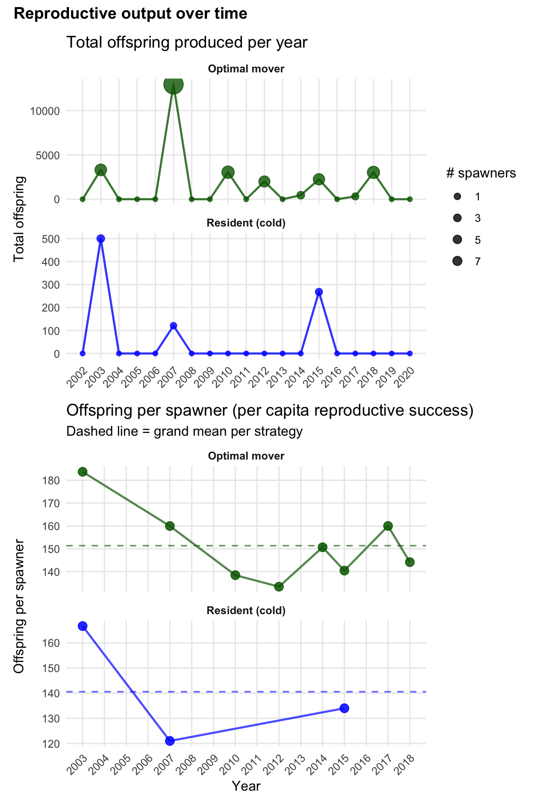
Compile end of simulation results
fish_results <- fish_pop %>%
mutate(
final_weight = mass_matrix[, n_days],
n_switches = switches
# boldness = move_threshold # positive = shy, negative = bold
)
fish_results %>%
group_by(strategy) %>%
summarise(mean_wt = round(mean(final_weight), 1),
mean_switches = round(mean(n_switches), 1))Plot only if move_stochastic = "indiv"
if (move_stochastic == "indiv") {
movers <- fish_results %>% filter(strategy == "optimal_mover")
# Panel A: boldness vs final weight
p_wt <- ggplot(movers, aes(x = boldness, y = final_weight)) +
geom_point(alpha = 0.6) +
geom_smooth(method = "lm", se = TRUE, color = "steelblue", linewidth = 0.8) +
geom_vline(xintercept = 0, linetype = "dashed", color = "grey50") +
annotate("text", x = 0.006, y = min(movers$final_weight) + 5,
label = "shy →", hjust = 0, size = 3.5, color = "grey40") +
annotate("text", x = -0.006, y = min(movers$final_weight) + 5,
label = "← bold", hjust = 1, size = 3.5, color = "grey40") +
labs(x = "Boldness (move_threshold)", y = "Final weight (g)",
title = "A: Boldness vs. end-of-season weight")
# Panel B: boldness vs number of patch switches
p_sw <- ggplot(movers, aes(x = boldness, y = n_switches)) +
geom_point(alpha = 0.6) +
geom_smooth(method = "lm", se = TRUE, color = "tomato", linewidth = 0.8) +
geom_vline(xintercept = 0, linetype = "dashed", color = "grey50") +
labs(x = "Boldness (move_threshold)", y = "No. patch switches",
title = "B: Boldness vs. switching frequency")
# Panel C: switching frequency vs final weight
p_sw_wt <- ggplot(movers, aes(x = n_switches, y = final_weight)) +
geom_point(alpha = 0.6) +
geom_smooth(method = "lm", se = TRUE, color = "mediumpurple", linewidth = 0.8) +
labs(x = "No. patch switches", y = "Final weight (g)",
title = "C: Switching frequency vs. end-of-season weight")
cowplot::plot_grid(p_wt, p_sw, p_sw_wt, ncol = 1)
}Daily abundance by strategy. Recruitment pulses from new cohorts are visible as sudden jumps.
ibm_summary |>
mutate(strategy_lbl = recode(strategy, !!!strategy_labs)) |>
ggplot(aes(x = date, y = n_alive, color = strategy_lbl)) +
geom_rect(
data = summer_shading,
aes(xmin = xmin, xmax = xmax, ymin = ymin, ymax = ymax),
fill = "grey80", alpha = 0.4, inherit.aes = FALSE
) +
geom_line(linewidth = 0.6) +
scale_color_manual(values = setNames(strategy_pal, strategy_labs), name = NULL) +
scale_y_continuous(limits = c(0, NA)) +
labs(x = NULL, y = "Number alive", title = "Daily abundance by strategy") +
theme_bw() +
theme(panel.grid = element_blank(), legend.position = "top")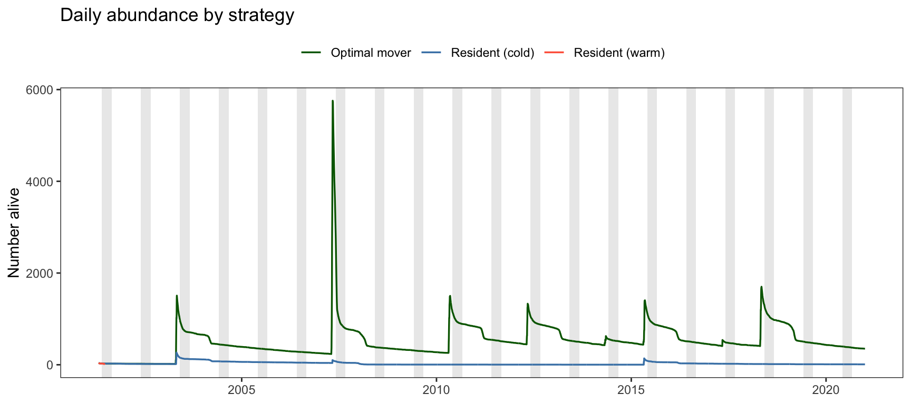
Daily biomass (total weight of all living individuals), a combined signal of abundance and mean body size.
ibm_summary |>
mutate(
strategy_lbl = recode(strategy, !!!strategy_labs),
biomass_kg = (n_alive * mean_weight) / 1000
) |>
ggplot(aes(x = date, y = biomass_kg, color = strategy_lbl)) +
geom_rect(
data = summer_shading,
aes(xmin = xmin, xmax = xmax, ymin = ymin, ymax = ymax),
fill = "grey80", alpha = 0.4, inherit.aes = FALSE
) +
geom_line(linewidth = 0.6) +
scale_color_manual(values = setNames(strategy_pal, strategy_labs), name = NULL) +
scale_y_continuous(limits = c(0, NA)) +
labs(x = NULL, y = "Biomass (kg)", title = "Daily biomass by strategy") +
theme_bw() +
theme(panel.grid = element_blank(), legend.position = "top")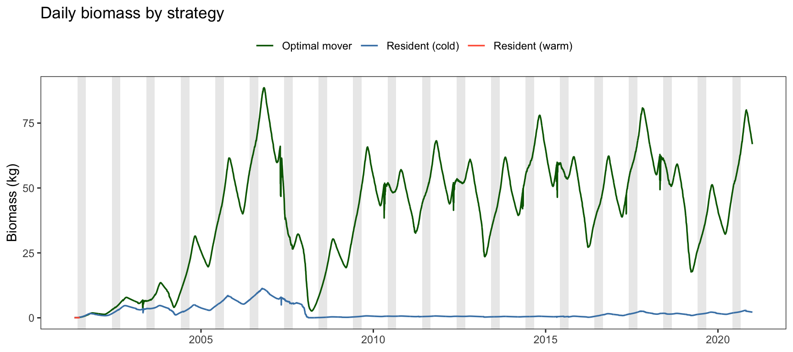
Stacked area chart of daily abundance broken down by integer age class. This reveals the seasonal pulse structure of each cohort as it ages through the population.
# Compute daily alive counts per strategy × age class (down-sampled to weekly)
daily_age <- ibm_long |>
filter(survived == 1, dayofsim %% 7 == 1) |>
mutate(
age_class_f = factor(paste0("Age-", pmin(age_class, 5L)), levels = paste0("Age-", 0:5)),
strategy_lbl = recode(strategy, !!!strategy_labs)
) |>
count(date, strategy_lbl, age_class_f)
age_pal <- c(
"Age-0" = "#d4e6f1", "Age-1" = "#5dade2", "Age-2" = "#1a5276",
"Age-3" = "#a9dfbf", "Age-4" = "#1e8449", "Age-5" = "#784212"
)
ggplot(daily_age, aes(x = date, y = n, fill = age_class_f)) +
geom_area(position = "stack", alpha = 0.85) +
scale_fill_manual(values = age_pal, name = "Age class") +
facet_wrap(~strategy_lbl, ncol = 1, scales = "free_y") +
labs(x = NULL, y = "Number alive", title = "Daily abundance by age class") +
theme_bw() +
theme(
panel.grid = element_blank(),
strip.text = element_text(face = "bold"),
legend.position = "right"
)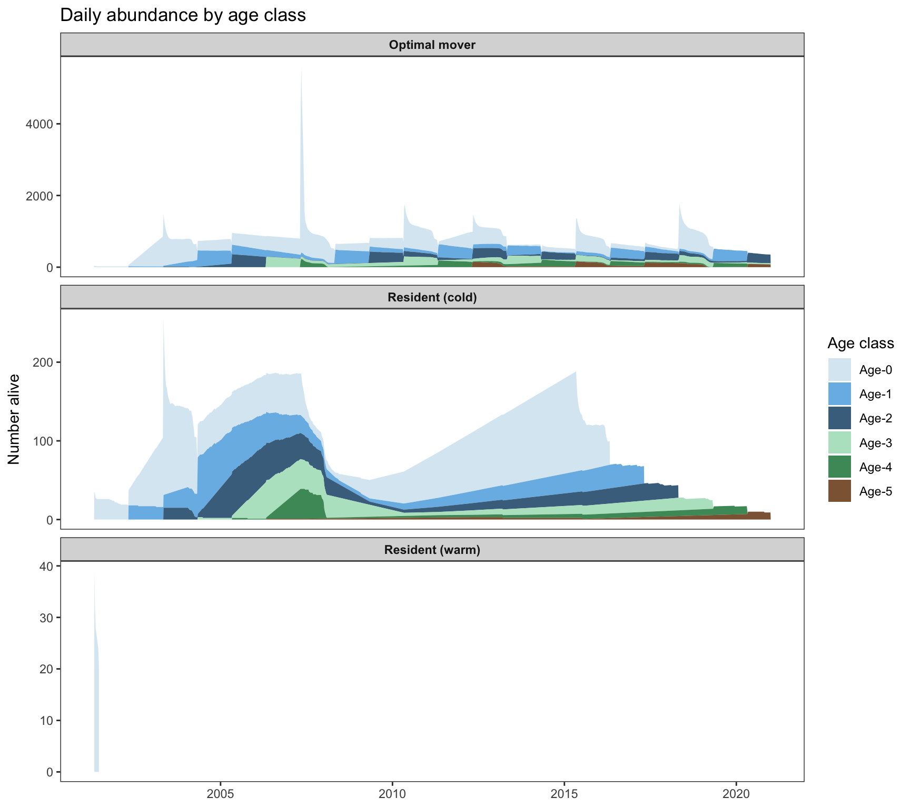
p_ann_abund <- ggplot(
census_summary |> filter(strategy != "resident_warm"),
aes(x = year, y = n_total, color = strategy_lbl, group = strategy_lbl)
) +
geom_line(linewidth = 0.8) +
geom_point(size = 2) +
scale_color_manual(values = setNames(strategy_pal, strategy_labs), name = NULL) +
scale_x_continuous(breaks = seq(2001, 2020, 2)) +
labs(x = NULL, y = "Count", title = "Annual abundance (October 1 census)") +
theme_bw() +
theme(panel.grid.minor = element_blank(), legend.position = "top")
p_ann_bio <- ggplot(
census_summary |> filter(strategy != "resident_warm"),
aes(x = year, y = biomass_g / 1000, color = strategy_lbl, group = strategy_lbl)
) +
geom_line(linewidth = 0.8) +
geom_point(size = 2) +
scale_color_manual(values = setNames(strategy_pal, strategy_labs), name = NULL) +
scale_x_continuous(breaks = seq(2001, 2020, 2)) +
labs(x = "Year", y = "Biomass (kg)", title = "Annual biomass (October 1 census)") +
theme_bw() +
theme(panel.grid.minor = element_blank(), legend.position = "none")
p_ann_abund / p_ann_bio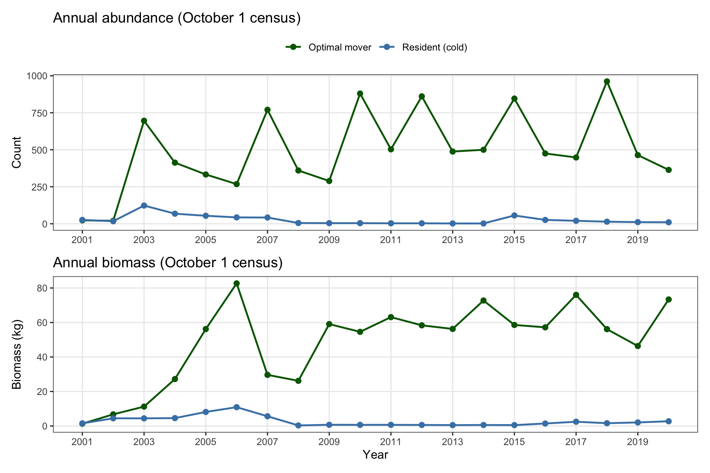
Stacked bar chart of the October 1 census broken down by integer age class, showing how population age structure varies across years and strategies.
age_pal <- c(
"Age-0" = "#d4e6f1", "Age-1" = "#5dade2", "Age-2" = "#1a5276",
"Age-3" = "#a9dfbf", "Age-4" = "#1e8449", "Age-5" = "#784212"
)
census_age |>
filter(strategy != "resident_warm") |>
ggplot(aes(x = year, y = n, fill = age_class_f)) +
geom_col(width = 0.85) +
scale_fill_manual(values = age_pal, name = "Age class") +
scale_x_continuous(breaks = seq(2001, 2020, 2)) +
facet_wrap(~strategy_lbl, ncol = 1, scales = "free_y") +
labs(
x = "Year", y = "Count",
title = "Annual age-structured abundance (October 1)"
) +
theme_bw() +
theme(panel.grid = element_blank(), strip.text = element_text(face = "bold"))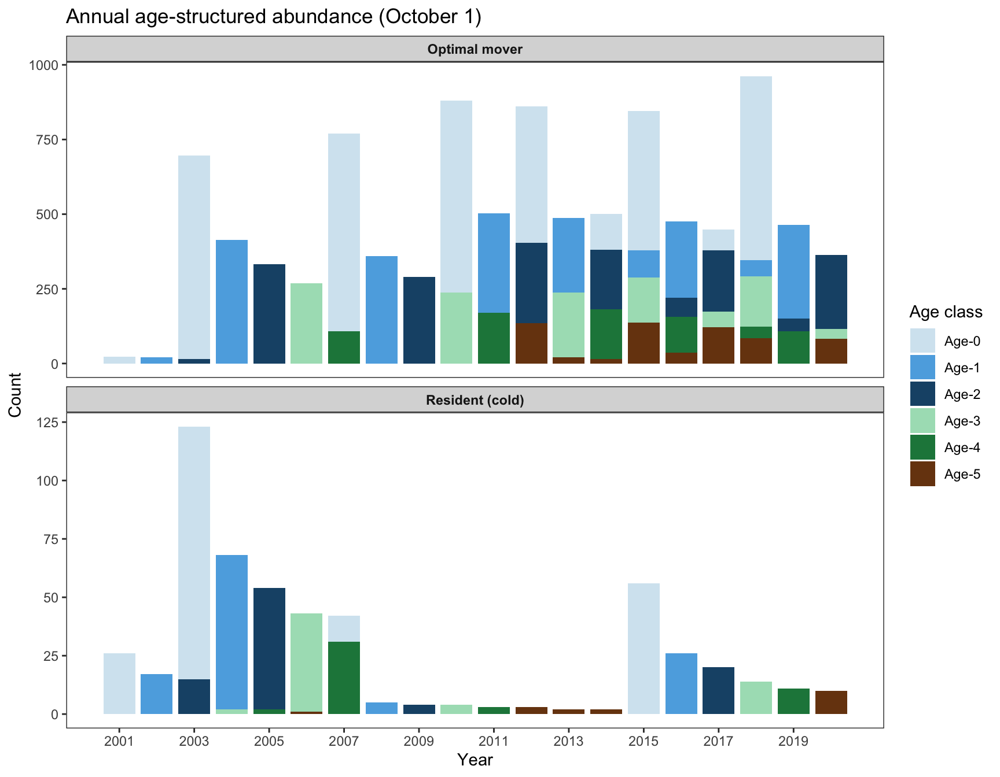
Von Bertalanffy-style mean weight-at-age by cohort and strategy. Each line traces one cohort from birth to its last observed age class in the census. Individual variation around the mean (±1 SD) is shown as ribbons.
# Monthly snapshots: mean and SD of weight within cohort × age class
waa <- ibm_long |>
filter(day(date) == 1) |>
group_by(strategy, cohort, age_class) |>
summarise(
mean_wt = mean(weight),
sd_wt = sd(weight, na.rm = TRUE),
age_mid = mean(age),
.groups = "drop"
) |>
mutate(
strategy_lbl = recode(strategy, !!!strategy_labs),
cohort_f = factor(cohort)
)
ggplot(waa |> filter(strategy != "resident_warm"),
aes(x = age_mid, y = mean_wt, group = cohort_f, color = cohort_f)) +
geom_ribbon(
aes(ymin = mean_wt - sd_wt, ymax = mean_wt + sd_wt, fill = cohort_f),
alpha = 0.08, color = NA
) +
geom_line(linewidth = 0.7, alpha = 0.8) +
scale_color_viridis_d(option = "turbo", name = "Cohort") +
scale_fill_viridis_d(option = "turbo", guide = "none") +
facet_wrap(~strategy_lbl) +
labs(
x = "Age (years)",
y = "Mean weight (g)",
title = "Weight-at-age by cohort and strategy",
subtitle = "Ribbons = ±1 SD; each line = one cohort"
) +
theme_bw() +
theme(panel.grid = element_blank())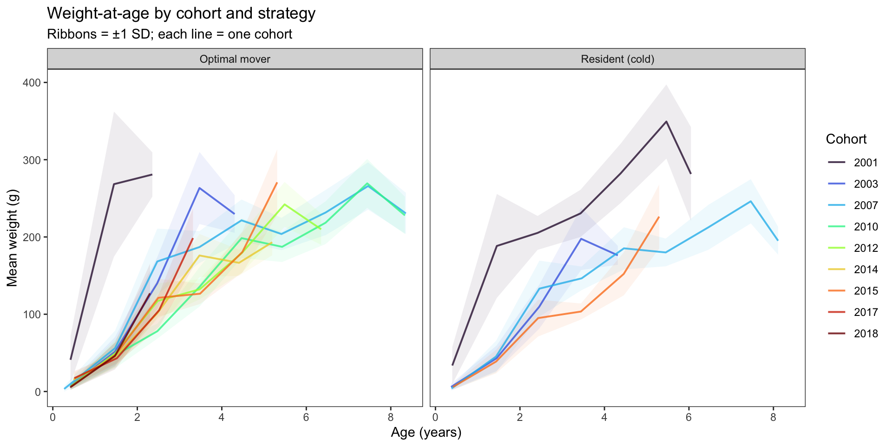
Plotting mean weight within each age class across census years (not by cohort) reveals whether growth rates have changed over time — in particular, whether increasing population size has suppressed individual growth (density dependence). The decline from early to later years is especially striking in young age classes.
waa_annual <- census |>
filter(strategy != "resident_warm") |>
mutate(strategy_lbl = recode(strategy, !!!strategy_labs)) |>
group_by(year, strategy, strategy_lbl, age_class) |>
summarise(
mean_wt = mean(weight),
sd_wt = sd(weight),
n = n(),
.groups = "drop"
) |>
filter(n >= 3, age_class <= 7) |>
left_join(
census_summary |> select(year, strategy, n_total),
by = c("year", "strategy")
)
waa_annual |>
mutate(age_class_f = paste0("Age-", age_class)) |>
ggplot(aes(x = year, y = mean_wt, color = strategy_lbl, group = strategy_lbl)) +
geom_ribbon(
aes(ymin = mean_wt - sd_wt, ymax = mean_wt + sd_wt, fill = strategy_lbl),
alpha = 0.15, color = NA
) +
geom_line(linewidth = 0.7) +
geom_point(aes(size = n), alpha = 0.8) +
scale_color_manual(values = setNames(strategy_pal, strategy_labs), name = NULL) +
scale_fill_manual(values = setNames(strategy_pal, strategy_labs), guide = "none") +
scale_size_continuous(range = c(1, 4), name = "n fish", guide = "none") +
scale_x_continuous(breaks = seq(2001, 2020, 3)) +
facet_wrap(~age_class_f, scales = "free_y", ncol = 4) +
labs(
x = "Census year",
y = "Mean weight (g)",
title = "Mean weight at age over time (October 1 census)",
subtitle = "Ribbon = ±1 SD | Point size ∝ sample size"
) +
theme_bw() +
theme(
panel.grid.minor = element_blank(),
strip.text = element_text(face = "bold"),
legend.position = "top"
)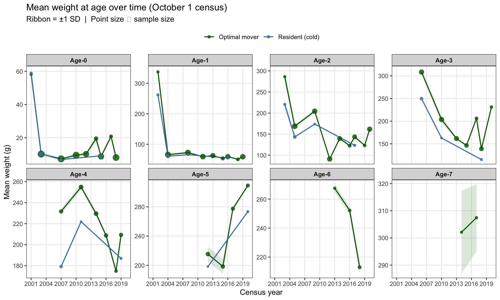
The sharp drop in mean weight-at-age between 2001–2003 coincides with the first recruitment pulse expanding the optimal mover population from ~25 to ~600 fish. To assess whether this reflects density-dependent growth suppression rather than cohort effects, we can plot mean weight at age directly against total abundance:
waa_annual |>
filter(strategy == "optimal_mover", age_class <= 4) |>
mutate(age_class_f = paste0("Age-", age_class)) |>
ggplot(aes(x = n_total, y = mean_wt)) +
geom_smooth(method = "lm", se = TRUE, color = "grey40", linewidth = 0.7, alpha = 0.2) +
geom_point(aes(color = year), size = 3, alpha = 0.9) +
scale_color_viridis_c(option = "plasma", name = "Year") +
facet_wrap(~age_class_f, scales = "free", ncol = 2) +
labs(
x = "Total population size at October 1 census",
y = "Mean weight (g)",
title = "Density–growth relationship by age class (Optimal mover)",
subtitle = "Point colour = year | Line = OLS fit"
) +
theme_bw() +
theme(panel.grid.minor = element_blank(), strip.text = element_text(face = "bold"))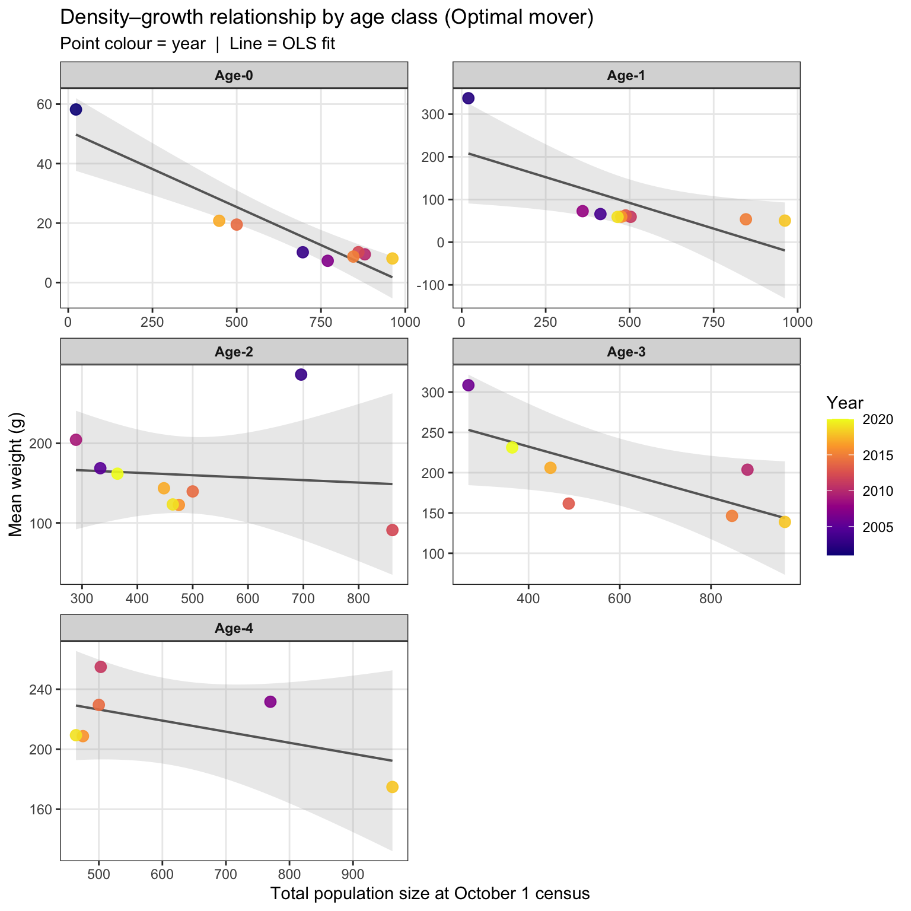
Ridgeline plots of body-size distributions at each October 1 census. Shifts in modal size and the broadening of distributions over time reflect multi-cohort structure.
census |>
filter(strategy != "resident_warm") |>
mutate(
strategy_lbl = recode(strategy, !!!strategy_labs),
year_f = factor(year, levels = rev(sort(unique(year))))
) |>
ggplot(aes(x = weight, y = year_f, fill = strategy_lbl)) +
geom_density_ridges(
alpha = 0.6, scale = 1.5,
rel_min_height = 0.01,
bandwidth = 5
) +
scale_fill_manual(values = setNames(strategy_pal, strategy_labs), name = NULL) +
facet_wrap(~strategy_lbl, scales = "free_x") +
labs(
x = "Weight (g)",
y = "Year",
title = "Weight frequency distributions at October 1 census"
) +
theme_bw() +
theme(
panel.grid = element_blank(),
strip.text = element_text(face = "bold"),
legend.position = "none"
)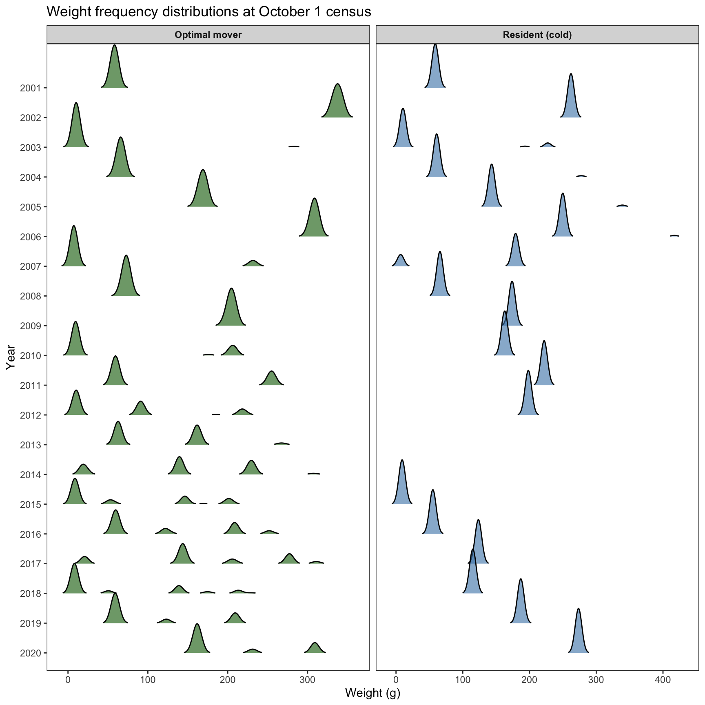
Annual apparent survival rates from the October 1 census, calculated as the ratio of fish in age class x+1 in year t+1 to age class x in year t within the same cohort. Rates above 1.0 can indicate new recruits entering an age class or census error.
apparent_survival |>
filter(strategy != "resident_warm") |>
ggplot(aes(
x = factor(age_class),
y = surv_rate,
fill = strategy_lbl
)) +
geom_hline(yintercept = 1, linetype = "dashed", color = "grey50") +
geom_boxplot(alpha = 0.6, outlier.shape = 21, outlier.size = 1.5, width = 0.5) +
scale_fill_manual(values = setNames(strategy_pal, strategy_labs), name = NULL) +
scale_y_log10(labels = scales::label_number(accuracy = 0.01)) +
facet_wrap(~strategy_lbl) +
labs(
x = "Age class (from)",
y = "Apparent annual survival (log scale)",
title = "Apparent survival between consecutive age classes",
subtitle = "Dashed line = survival = 1.0 | each box aggregates all cohorts"
) +
theme_bw() +
theme(panel.grid.minor = element_blank(), strip.text = element_text(face = "bold"),
legend.position = "none")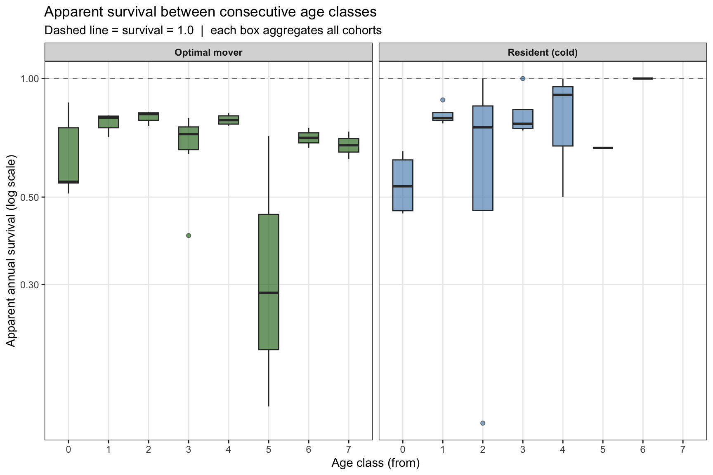
Annual finite rate of increase (λ = Nt+1 / Nt) from the October 1 census. Values above 1 indicate population growth; below 1, decline.
ggplot(
lambda_df |> filter(strategy != "resident_warm"),
aes(x = year, y = lambda, color = strategy_lbl, group = strategy_lbl)
) +
geom_hline(yintercept = 1, linetype = "dashed", color = "grey40") +
geom_line(linewidth = 0.8, alpha = 0.8) +
geom_point(size = 2, alpha = 0.9) +
scale_color_manual(values = setNames(strategy_pal, strategy_labs), name = NULL) +
scale_y_log10(labels = scales::label_number(accuracy = 0.1)) +
scale_x_continuous(breaks = seq(2002, 2020, 2)) +
labs(
x = "Year",
y = "λ (log scale)",
title = "Annual finite rate of increase (October 1 census)",
subtitle = "Dashed line = λ = 1 (stable population)"
) +
theme_bw() +
theme(panel.grid.minor = element_blank(), legend.position = "top")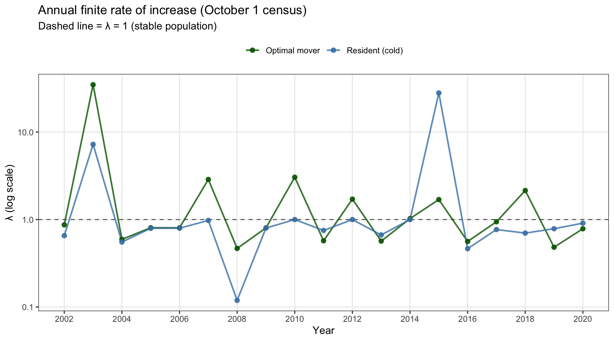
Fraction of each cohort still alive at each integer age class (lx curves). These visualise variation in cohort longevity across years and strategies.
lx_df |>
filter(strategy != "resident_warm") |>
mutate(cohort_f = factor(cohort)) |>
ggplot(aes(
x = age_class,
y = lx,
group = cohort_f,
color = cohort_f
)) +
geom_line(linewidth = 0.6, alpha = 0.8) +
scale_color_viridis_d(option = "turbo", name = "Cohort") +
scale_y_continuous(labels = scales::label_percent(accuracy = 1)) +
scale_x_continuous(breaks = 0:12) +
facet_wrap(~strategy_lbl) +
labs(
x = "Age class",
y = "Fraction of cohort surviving",
title = "Cohort survivorship curves (lx)",
subtitle = "Each line = one birth cohort"
) +
theme_bw() +
theme(panel.grid.minor = element_blank(), strip.text = element_text(face = "bold"))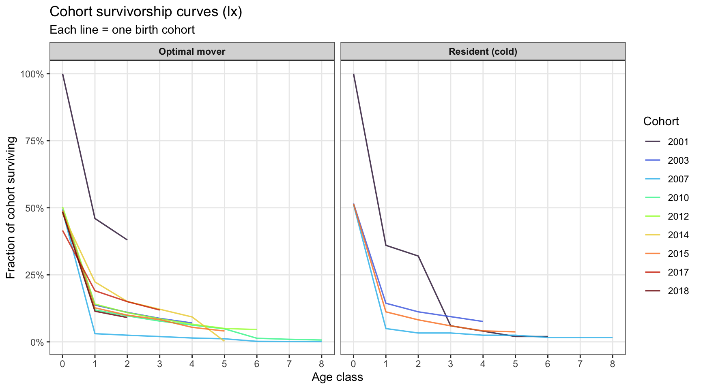
When are fish dying and how large are they/how fast are they growing relative to the survivor mean?
n_days <- ncol(mass_matrix)
# Per-fish fate summary (used for panel C)
fish_fate <- fish_registry %>%
mutate(
survived = if_else(!is.na(mass_matrix[pid, n_days]), "Survived", "Died"),
days_alive = rowSums(!is.na(mass_matrix))
)
# fish_fate %>% count(strategy, survived)strategy_order <- c("resident_warm", "resident_cold", "optimal_mover")
# Panels A & B: compare dying fish to surviving fish on the same day
# -----------------------------------------------------------------------
# Dying fish: weight and growth rate on their day of death (survived == 0)
death_records <- ibm_long %>%
filter(survived == 0) %>%
select(pid, strategy, date, dayofsim, weight, ggd) %>%
mutate(fate = "Died")
# Death days across all strategies
death_days <- death_records %>% distinct(dayofsim)
# Surviving fish (those alive at end): weight and growth on those same death days
survivor_pids <- fish_fate %>% filter(survived == "Survived") %>% pull(pid)
survivor_records <- ibm_long %>%
filter(pid %in% survivor_pids) %>%
inner_join(death_days, by = "dayofsim") %>%
select(pid, strategy, dayofsim, weight, ggd) %>%
mutate(fate = "Survived")
# Mean of ALL survivors (across strategies) on each death day
survivor_means <- survivor_records %>%
group_by(dayofsim) %>%
summarise(mean_wt_surv = mean(weight, na.rm = TRUE),
mean_ggd_surv = mean(ggd, na.rm = TRUE),
.groups = "drop")
# Difference: dying fish value minus all-survivor mean on same day
df_diff <- death_records %>%
left_join(survivor_means, by = "dayofsim") %>%
mutate(
wt_diff = weight - mean_wt_surv,
ggd_diff = ggd - mean_ggd_surv,
strategy = factor(strategy, levels = strategy_order)
)
# -----------------------------------------------------------------------
p_wt <- ggplot(df_diff, aes(x = strategy, y = wt_diff)) +
geom_hline(yintercept = 0, linetype = "dashed", color = "grey50") +
geom_boxplot(width = 0.4, outlier.shape = NA, fill = "grey") +
geom_jitter(width = 0.15, size = 2, alpha = 0.7) +
labs(x = NULL, y = "Weight difference (g)",
title = "Dying fish wt. minus mean survivor wt. (same day)") +
theme_bw() + theme(panel.grid = element_blank())
p_ggd <- ggplot(df_diff, aes(x = strategy, y = ggd_diff)) +
geom_hline(yintercept = 0, linetype = "dashed", color = "grey50") +
geom_boxplot(width = 0.4, outlier.shape = NA, fill = "grey") +
geom_jitter(width = 0.15, size = 2, alpha = 0.7) +
labs(x = NULL, y = "Growth rate difference (g/g/d)",
title = "Dying fish growth minus mean survivor growth (same day)") +
theme_bw() + theme(panel.grid = element_blank())
p_days <- ggplot() +
geom_rect(data = summer_shading,
aes(ymin = xmin, ymax = xmax, xmin = ymin, xmax = ymax),
fill = "grey", alpha = 0.3, inherit.aes = FALSE) +
geom_jitter(data = death_records,
aes(x = strategy, y = date, color = strategy),
width = 0.15, size = 2.5, alpha = 0.8) +
scale_x_discrete(limits = strategy_order) +
labs(x = NULL, y = "Day of death (day of year)",
title = "When did non-survivors die?") +
theme_bw() + theme(legend.position = "none", panel.grid = element_blank()) +
scale_color_manual(values = c(resident_warm = "red",
resident_cold = "blue",
optimal_mover = "darkgreen"))
egg::ggarrange(p_wt, p_ggd, p_days, ncol = 1)Yes, overall, the survival module is behaving correctly: it’s largely selecting against small, slow-growing fish in a biologically interpretable way.
resident_warm fish that die in summer are smaller and actively losing mass relative to the population-wide survivor mean on those same days. The tight clustering near zero for resident_cold and optimal_mover reflects that deaths in those strategies tend to occur early in the year when fish are small and the all-strategy survivor mean hasn’t yet diverged much.
Timing of deaths (panel C) also makes biological sense: + resident_cold deaths cluster early when fish are small and baseline survival is lowest, and fish are also experiencing negative growth due to low temps + optimal_mover deaths also cluster early for the same reasons + resident_warm deaths cluster mid-summer as the warm patch becomes suboptimal. Likely not as much early season mortality b/c growth potential is just a bit higher
Now, let’s investigate the context of optimal_mover mortalities. Where and when to they occur and what are the thermal and growth conditions that they experienced?
mover_deaths <- ibm_long %>%
filter(strategy == "optimal_mover", survived == 0) %>%
select(pid, date, dayofsim, patch, weight, ggd)
dayofsim_max <- max(mover_deaths$dayofsim) + 10
temps <- habitat_df %>%
filter(dayofsim <= dayofsim_max) %>%
select(dayofsim, date, temp_warm, temp_cold) %>%
pivot_longer(c(temp_warm, temp_cold), names_to = "patch", values_to = "temp") %>%
mutate(patch = if_else(patch == "temp_warm", "warm", "cold"))
p_temp <- ggplot(temps, aes(x = date, y = temp, color = patch)) +
geom_line(linewidth = 0.8) +
geom_rug(
data = mover_deaths, aes(x = date, color = patch),
sides = "b", linewidth = 1.2, length = unit(0.06, "npc"), inherit.aes = FALSE
) +
scale_color_manual(values = c(warm = "tomato", cold = "steelblue")) +
labs(x = NULL, y = "Temperature (°C)", color = "Patch",
title = "Optimal mover mortality: patch context and timing") +
theme_bw() + theme(axis.text.x = element_blank(), axis.ticks.x = element_blank())
p_death <- ggplot(mover_deaths, aes(x = date, y = ggd, color = patch, size = weight)) +
geom_hline(yintercept = 0, linetype = "dashed", color = "grey50") +
geom_point(alpha = 0.85) +
scale_color_manual(values = c(warm = "tomato", cold = "steelblue")) +
scale_size_continuous(range = c(3, 8), name = "Weight (g)") +
labs(x = "Date", y = "Growth rate at death (g/g/d)", color = "Patch") +
theme_bw()
egg::ggarrange(p_temp, p_death, ncol = 1, heights = c(1, 1.2))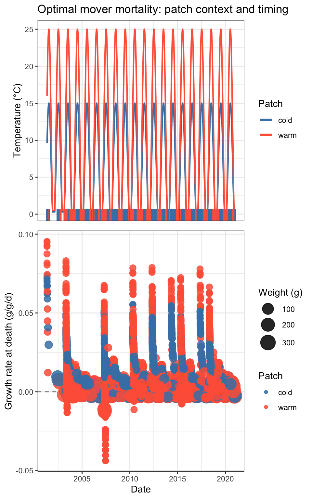
The early cluster of deaths is dominated by warm-patch fish with negative growth rates and small body sizes — these fish are actively losing mass and dying. Temperatures in both patches are essentially identical and near-zero during this period, so the warm patch offers no thermal advantage, but movers are nonetheless ending up there and dying. The one cold-patch early death follows the same pattern.
The two late deaths (days ~123–133) are different in character: both have positive growth rates and are much larger, suggesting they’re stochastic rather than condition-driven mortality.
The key diagnostic question this raises: why are movers preferentially occupying the warm patch in early winter when temperatures are identical and growth is negative in both? That points to investigating the patch-choice logic at low temperatures — the growth potential lookup may not be differentiating between patches when temperatures are near-flat, leading to essentially arbitrary placement. This makes sense, especially when combined with the softmax/probabilistic stochasticity in patch choice…fish won’t switch patches if the growth advantage is tiny…so they stay in the warm habitat where densities are ~high and